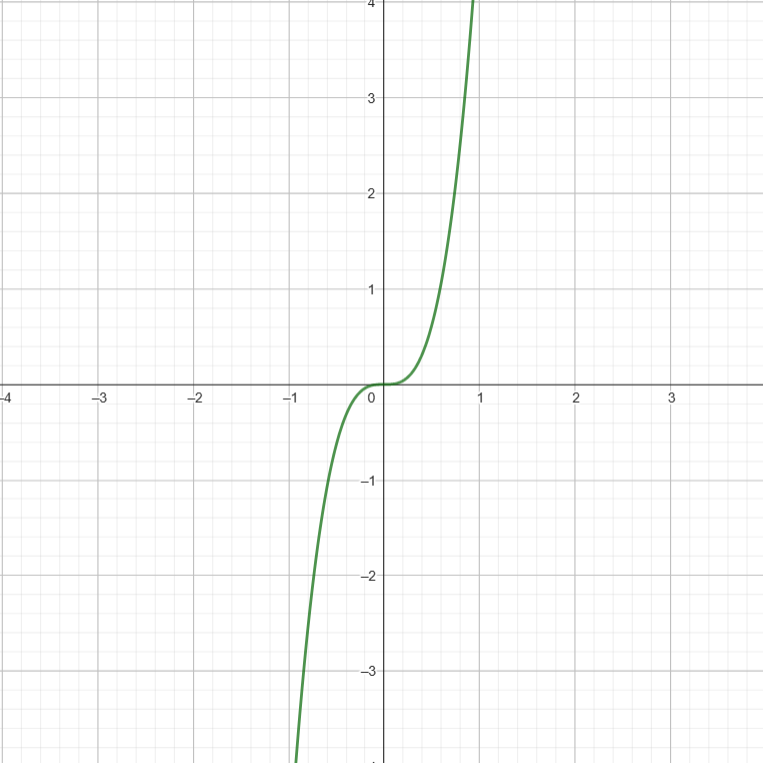
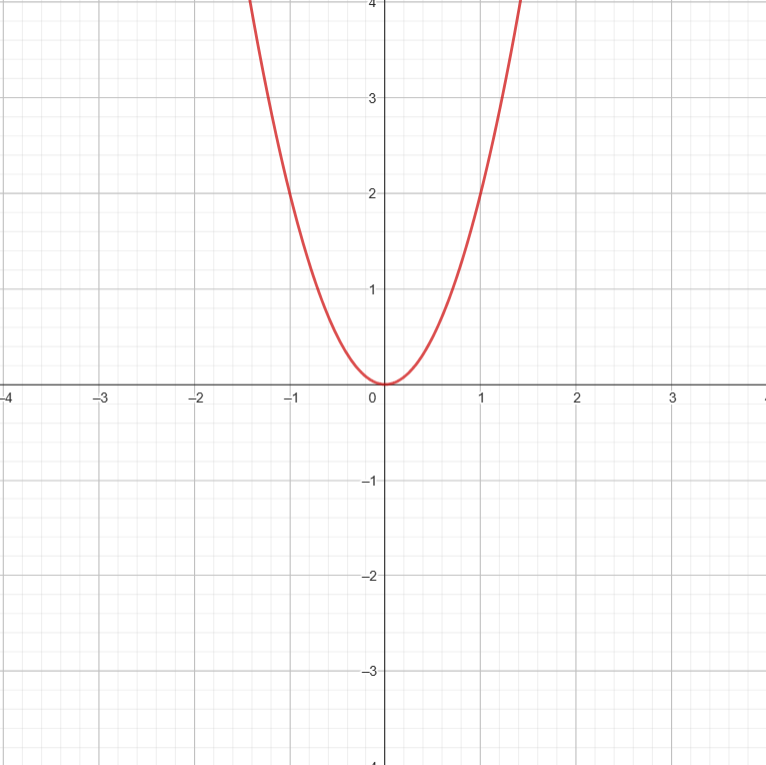
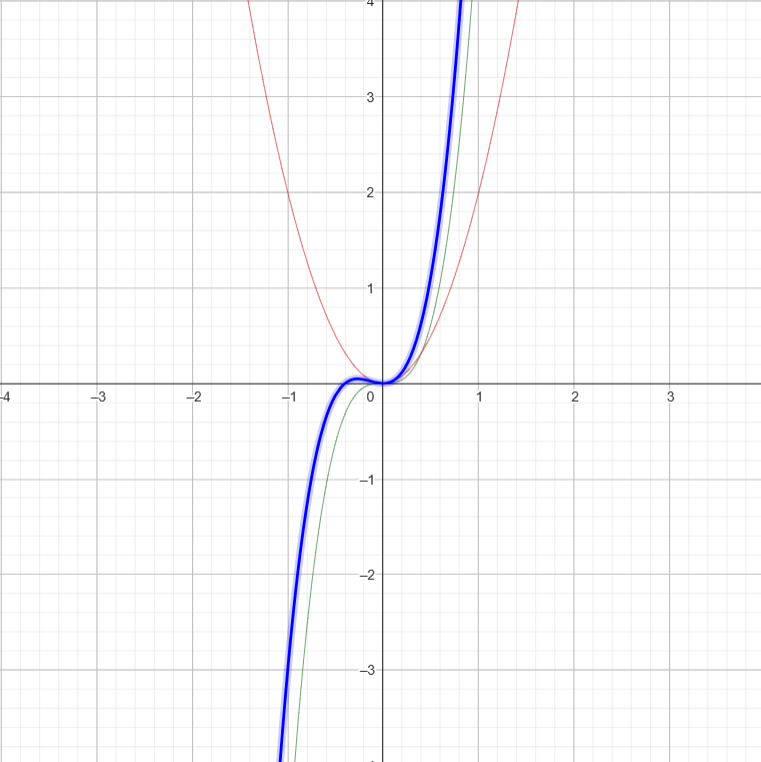
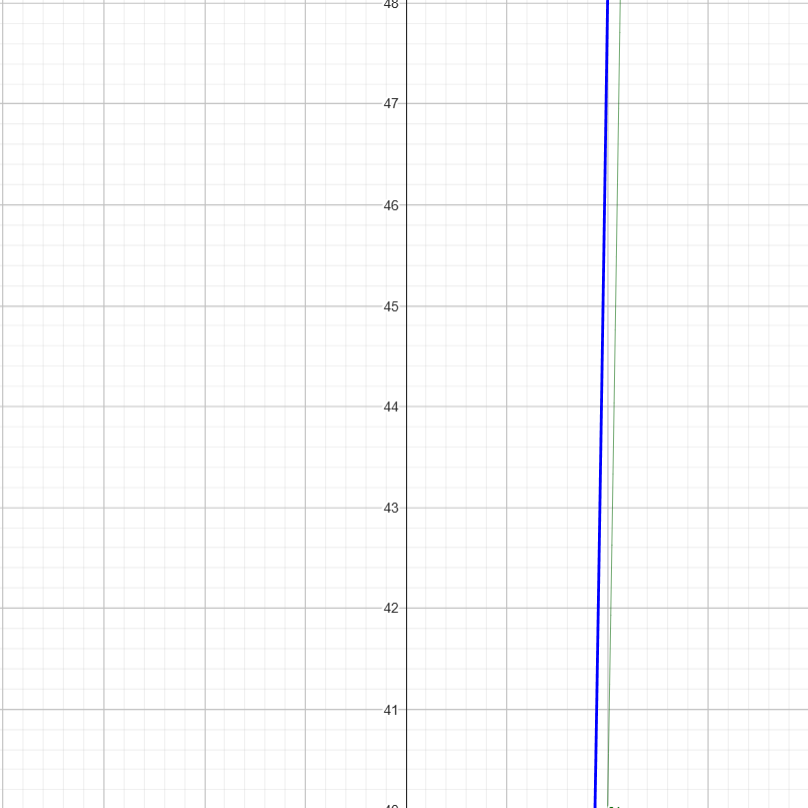

A Comprehensive Guide to Algorithms
Table of Contents
- 1. Prelude
- 2. Basic Programming
- 3. What are Data Structures
- 4. Algorithm
- 5. Measure of efficiency
- 6. How to find/prove a function’s runtime complexity
- 7. Recurrence Relations
- 8. Snippets of Code that’ll help later on
- 9. Understanding Arrays
- 10. Basic Array Operations
- 11. Characteristics of Sorting Algorithms
- 12. Sorting Algorithms
- 13. Hashing
- 14. Algorithms which ’Divide and Conquer’
- 15. Greedy Algorithms
- 16. Dynamic Programming
- 17. Backtracking
- 18. Branch and Bound
- 19. PNP
- 20. LinkedList
1. Prelude
This page is my own explanation and interpretation of algorithms, what they are and how they work in general. The order of concepts presented is mildly influenced by my professor’s classes at college. I’d also like to let the readers know that these are notes from a student’s perspective, which means these could have mistakes. If you find any, please do let me know and I’ll correct them at the earliest. Thank you for reading!
2. Basic Programming
2.1. Finding Prime Numbers in a given Range
2.1.1. Brute force approach
r1 = 3 r2 = 10 # example numbers for i in range(r1, r2+1): if i<2: continue prime = True for j in range(2,i): if i%j == 0: prime = False break if prime: print(i, end=" ")
3 5 7
2.1.2. Sieve of Eratosthenes
- If a number is prime, then all its multiples must be composite. Eliminating those composite numbers is what Sieve of Eratosthenes does.
- This is one of the fastest ways to find all prime numbers up to a given number N.
Initially write down all the numbers:
2 3 4 5 6 7 8 9 10 11 12 13 14 15 16 17 18 19 20 21 22 23 24 25 26 27 28 29 30
From this list, you start from the first number and keep crossing out all of its multiples. You keep going till you hit \(\sqrt{n}\) because it’s a rule.
- When you start writing the multiples, you start from \(p^{2}\).
Code
2.1.3. Segmented Sieve
2.2. Find the number of odd numbers in a given range
def main(): r1, r2 = map(int, input().split()) if r1%2==0 and r2%2==0: print((r2-r1+1)//2) else: print(((r1-r1+1)//2)+1) main()
2.3. GCD
- Given that:
- First line: An integer
n(1 ≤ n ≤ 105), the number of guardian stones. - Second line:
nspace-separated positive integers \((1 \le \text{a[i]} \le 10^{9})\), the numbers on the stones
- First line: An integer
2.3.1. Finding GCD for two numbers
def gcd(a, b): if b==0: return a else: return gcd(b, a%b)
- Ideally, you’d expect \(a\) to be a larger number than \(b\), but euclidean
algorithm can handle either way.
- Say we have
36 % 24: The quotient would be 1 and the remainder would be 12. - If we have
24 % 36:- In the first iteration, the quotient would be 0 and the remainder would be 24.
- In the second iteration, the quotient is back to being 24.
- Say we have
2.3.2. Finding GCD for a list of numbers
- For all the items in the list, you find the gcd of the first two numbers, then the gcd of the result and the 3rd number, then the gcd of the result and the 4th number, and so on.
def main(): arr = list(map(int, input().split())) result = arr[0] for x in arr: result = arr(result, x) print(result) def gcd(a, b): if b==0: return a else: return gcd(b, a%b) main()
2.4. Distinct factors of \(n\), sorted
n = int(input()) [print(item, end=' ') for item in range(1, n+1) if item % n == 0]
2.5. Reverse Characters in Timed Chunks
- Reverse first k characters
- Leave the next k characters as they are
- Repeat this pattern throughout the message
def main(): reverse(input(), int(input())) def reverse(s, k): result = "" for i in range(0, len(s), 2*k): result += s[i:i+k][::-1] + s[i+k : i + 2*k] print(result) main()
2.6. Reverse only the vowels in a string
def main(): reverseVowels(input()) def reverseVowels(s): l = 0 r = len(s)-1 arr = list(s) while l<r: while l<r and not isVowel(arr[l]): l += 1 while l<r and not isVowel(arr[r]): r -= 1 if l<r: arr[l], arr[r] = arr[r], arr[l] l += 1 r -= 1 print("".join(arr)) def isVowel(c): return c in "aeiou" main()
2.7. Rotating an array
def main(): stream_alignment([1,2,3,4,5,6, 7], 10) def stream_alignment(arr, k): k = k%len(arr) # [print(x, end=" ") for x in arr[-k:] + arr[:-k]] print(*arr[-k:] + arr[:-k]) main()
5 6 7 1 2 3 4
3. What are Data Structures
3.1. Why do you need Data Structures?
- You choose a structure, based on what operation you want to do on it, and what it takes to do that operation.
3.2. Primitive vs Non-Primitive
- Primitive data types are baked into the language itself.
- Non-Primitive datatypes are more complex ways to store and access data.
3.3. Abstract Data Types
- You define behaviour but hide implementation.
3.4. Auxillary Space
- Additional space temporarily needed to manipulate data in a data structure.
4. Algorithm
4.1. What an Algorithm is
Simply put, an algorithm is a series of steps to solve a problem. But a much more formal definition of the term, would have these key points checked:
- 0 or more inputs
- 1 or more outputs
- The number of steps must be finite
- The steps must be unambigous
In turn, an algorithm must definitely solve a problem.
4.2. Specification of an Algorithm
- Name of the Algorithm
- List of inputs/ arguments
- Initial Condition
- Final Condition
4.3. Correctness of an algorithm
For a given specification, an algorithm is correct if it
- Stops
- Returns correct output
- Can prove a relation between the input and output
4.4. What a pseudocode is
Algorithms are generally written in plain English, while pseudocodes convey the same sequence of steps using common programming syntax. Here are some constructs in pseudocode:
- Words like
for,if,while,return, etc. are common to most programming languages. Hence these are adopted here too. - For assignment, we use \(\Leftarrow \) instead of =.
- For checking equality, we use
=instead of==. - In loops, we use the word
doat the end. - In conditions, we use the word
then.
Example 1.
for(i <- 1 to 10), do:
A[i] <- A[i] + 5
Example 2.
if(x = 1), then:
function_name(parameter1, parameter2)
Example 3.
return value
5. Measure of efficiency
5.1. Growth Rate
- Runtime-complexity is an abstract measure of power/time required to execute an algorithm. We will revisit this shortly.
- Any sort of real-life parameters would vary across different systems and environments. For example, if a system ’A’ sorts 10,000 numbers in 2 seconds, and system ’B’ sorts the same 10,000 numbers in 1.5 seconds, you can’t conclude that system ’B’ is more efficient than system ’A’.
- The reason for this is that we know nothing about their system specifications, and whether they’re doing this in the same system, under the same environment.
- This is why an abstract measure of power/time required,
- The growth rate of an algorithm, denoted by \( g(n)\), is a function of the size of the input given to the algorithm, which tells us how the space requirements or the running time increases as the size of the input increases.
- Here are some examples:
- Statements like
print()has \( g(n) = 1 \) because they don’t depend on input data. - Loops have \( g(n) = n \), because the input to the loops are the number of iterations it should perform.
eg.
for(int i=0 ; i< *n* ; i++) - Nested loops generally have non-linear complexity. If the outer loop runs \(n\) times and the inner loop runs \(m\) times, then \( g(m,n) = mn \).
- Statements like
- To compare different algorithms, we use a set of growth rates for each algorithm.
5.2. RAM Model of finding Growth rate
5.2.1. Definition
- The Random Access Machine Model defines the growth rate to be the number of “primitive operations/computations” needed to solve the algorithm.
- Here are the things which count as a primitive operation:
- One Assignment
<- - Indexing an element in an array
A[i] - One arithmetic/logical operation
+,-,/,*,<,>,= - One
returnstatement.
- One Assignment
5.2.2. How to count primitive operations
- One primitive operation is considered one unit time i.e. \( g(n) = 1 \)
- In case of loops, you run through the loops:
- Count the primitive operations inside the inner-most loop
- Multiply that with how the iteration-counter variable (
i,j, etc) is changing. This product is essentially how many times the primitive operations run for.
5.2.3. Examples
- Example 1
S1: curMax ← A[0] S2: i← 1 S3: while i <= (n-1) do S4: if curMax < A[i] then S5: curMax ← A[i] S6: i ← i+1; S7: return curmax
Statement Primitive Operation(s) Time Explanation S1 <-,A[0]2 Assignment, Indexing S2 <-1 Assignment S3 <=,n-12n Logical, Arithmetic done n times S4 <,A[i]2(n-1) Logical, Indexing done (n-1) times S5 <-,A[i]0 to 2(n-1) Assigment, Indexing: Best Case to Worst Case S6 <-,i+12(n-1) Assignment, Arithmetic done (n-1) times S7 return1 Return - Time taken for Best Case: \(g(n) = 6n\)
- Time taken for Worst Case: \(g(n) = 8n-2\)
- Example 2
def main(): a=5 b=6 c=10 for i in range(n): for j in range(n): x = i*i y = j*j z = i*j for k in range(n): w = a*k + 45 v = b*b d = 33 main()
Statement Primitive Operation(s) Time Explanation S1 def mainis just a function definitionS2 =1 Assignment S3 =1 Assignment S4 =1 Assignment S5 for i in range(n)is just a loop definitionS6 for j in range(n)is just a loop definitionS7 =,*2n2 Assignment, Arithmetic happening n2 times S8 =,*2n2 Assignment, Arithmetic happening n2 times S9 =,*2n2 Assignment, Arithmetic happening n2 times S10 for k in range(n)is just a loop definitionS11 =,*,+3n2 Assignment, Arithmetic, Arithmetic happening n2 times S12 =,*2n2 Assignment, Arithmetic happening n2 times S13 =n Assignment happening n2 times S14 main()1 Function Call Time taken: \(g(n) = 11n^{2} + 4\)
- Example 3
void g(int n){ for(int i=0; i<n; ++i) for(int j=0; j<=i; ++j) f(); }
We’ll drop the constants because we’re only concered about how the runtime is related to
n.Statement Primitive Operation(s) Time Explanation S1 Function definition S2 Loop definition S3 Loop definition S4 f()(1+2+3+4+...+n)* runtime off()Loop’s counter variable is dependent on n- On working through the program’s flow:
- Iteration 1 of the outerloop:
f()runs once, because(j<=i)is satisfied (j=0) - Iteration 2 of the outerloop:
f()runs twice (j=0,j=1) - Iteration 3 of the outerloop:
f()runs thrice (j=0,j=1,j=2) - …
- Iteration n of the outerloop:
f()runs n times
- Iteration 1 of the outerloop:
- So, the runtime is (
1+2+3+...+n) = \( \frac{n(n+1)}{2}\) * runtime of \(f()\)
- On working through the program’s flow:
- Example 4
function isPrime(n) { for (i = 2; i <= sqrt(n); ++i){ if (n % i == 0){ return false; } } return true; }
Statement Primitive Operation(s) Time Explanation S1 function definition S2 loop definition S3 %,==2(√n-2) Whatever is inside the ifblock may/may not be executed 2√(n-2) times, but the condition is definitely being checked that many times- So the runtime is \(\sqrt{n}\)
- Example 5
int a = 0, i = N; while (i > 0){ a += i; i /= 2; }
Statement Primitive Operation(s) Time Explanation S1 =,=2 Assignment, Assignment S2 loop initialization S3 =,+2(log2(n)) Assignment, Arithmetic running \(log_{2}(n)\) times - On looking at
S4, we find that the loop counter variable keeps halving. - let’s work through the program flow, assuming \(n=16\). Hence
i=16too- Iteration 1:
a+=16happens, and nowi = 8 - Iteration 2:
a+=8happens, and nowi = 4 - Iteration 3:
a+=4happens, and nowi = 2 - Iteration 4:
a+=2happens, and nowi = 1 - Iteration 5:
a+=1happens, and nowi = 0(iis an integer, so 0.5 is basically 0)
- Iteration 1:
- \(n = 16\) meant 5 iterations \(5 = log_{2}(16) + 1\)
- Hence, if a loop as a counter variable dividing itself by \(k\), then the number of iterations is \(log_{k}(n)\).
- On looking at
- Example 6
//Determines the value of the largest element in a given array //Input: An array A[0..n − 1]of real numbers //Output: The value of the largest element in A maxval <- A[0] for i <- 1 to (n−1) do if A[i]>maxval then maxval <- A[i] return maxvalStatement Primitive Operation(s) Time Explanation S1 <-,A[0]2 Assignment, Indexing S2 Loop Definition S3 A[i],>2(n-2) Indexing, Logical happening n times S4 <-,A[i]0 to 2(n-2) Assignment, Indexing, depends on the condition S5 return1 return statement - Best Case = \( 2n-1 \)
- Worst Case = \( 4n-5 \)
- Overall time complexity = \( O(n) \)
5.3. Runtime Complexity
- Runtime-complexity is where we find the set of growth rates for 3 different scenarios:
5.3.1. The worst case, denoted by O (Big-Oh)
- Denoted by \( O(g(n)) \)
- It’s a set that contains any multiple of the growth rate of the worst scenario possible, and the growth rates of all the cases better than this.
- So when we say an algorithm has a complexity of \( O(g(n)) \) , it means that it’s order of growth is definitely less than any multiple of \(g(n)\).
- Some examples:
- \( n \subseteq O(n^{2}) \).
- \( \frac{1}{2} n (n-1) \subseteq O(n^{2}) \)
- \( an^{2} \subseteq O(n^{2}) \)
- \( an^{3} + bn^{2} + cn + d \subseteq O(n^{3})\)
- The last example might seem a little strange because \(an^{3} + bn^{2} + cn + d\) seems like a superset to \(n^{3}\), not a subset.
The reason for this is because \(n\) is a very large value. At such large values, the contribution of \( n^{3} \) is way more significant than the other terms, and at that point, it’s pretty much equal to \(n^{2}\).
- Say we have \( 5n^{3} + 2n^{2} \).
Let \( f1(n) = 5n^{3}\)

\( f2(n) = 2n^2 \)

\(g(n) = f1(n) + f2(n)\)

At very large values of \(n\) , \(g(n)\) pretty much converges with \(f1(n)\).

- Here’s some more examples, involving a little bit of calculation:
- \( (n^{2} + 1 )^{10} \subseteq O(n^{20}) \)
- \( 2^{nlog_{2} (n+2)} + (n+2)^{2}log(n) \)
= \( (n+2)^{n} + (n+2)log(n) \)
= \( \subseteq O(n^{n}) \)
5.3.2. The best case, denoted by ω (Big-Omega)
- Denoted by \( \omega(g(n)) \)
- It’s a set that contains any multiple of the growth rate of the best scenario possible, and the growth rates of all the cases worse than this
- So when we say an algorithm has a complexity \( \omega(g(n)) \), it means that the order of growth is definitely more than any multiple of \(g(n)\).
- Some examples:
- \( n^{3} \subseteq \omega(n^{2}) \)
- \( \frac{1}{2} n (n-1) \subseteq O(n^{}) \)
5.3.3. The average case, denoted by Θ (Big-theta)
5.4. Asymptotic Efficiency
5.4.1. Asymptote
- An asymptote is the tangent of a curve as it approaches \(\infty\) . A curve will generally have a fixed behaviour at such large inputs.
- So when we say one growth function is asymptotically more efficient than another, it simply means that its asymptote has a smaller slope.
5.4.2. Asymptotic efficiency and runtime complexity
- As we’ve seen, runtime complexites are sets of growth rates, which consist of one benchmark growth rate (the worst one, the best one, or the average one).
- In case of runtime complexity, the whole point of taking the set of growth rates, was to compare growth rates. Given a growth rate, you try to fit them in a set. This set can be compared with other sets, and hence come to a conclusion on order of growth.
- In case of asymptotic efficiency, we compare slopes of asymptotes (tangent of a curve near infinity) of growth rates. All in all, we’re doing the same comparison in both asymptotic efficiency and runtime complexity.
- Runtime complexity uses the set theory, and gives us a more analytical method to get to conclusions, while asymptotic efficiency helps us visualize it on a graph ( \(n\) vs \(O(n)\) ).
5.4.3. Asymptotically tight or loose
- When we say some growth rate is in \( O(g(n)) \), it means that the given growth rate is no more than \(g(n)\). So \( O(g(n)) \) is an upper bound.
- Similarly, when we say some growth rate is in \( \omega(g(n)) \), it means that the given growth rate is definitely more than \( g(n) \). So \( \omega(g(n)) \) is a lower bound.
- Both of these bounds are at two far-apart ends of the spectrum. Hence we call them asymptotically loose bounds.
- If a given growth rate is in both \( O(g(n)) \) and \( \omega(g(n)) \) , then it means the upper bound and lower bound are the same thing. Here, the growth rate is simply said to be in \( \theta(g(n)) \).
5.4.4. Some complexities to keep in mind
- Common growth rates, arranged in order
\[ O(1) < O( log(n) ) < O( n^{x} ) < O( x^{n} ) < O( n!) \] for \(1\)<\(x\)<<n
- Example 1
- Compare growth rate of \(O(n)\) and \(O(n^{2}) \)
- Answer: \( O(n) \subseteq O(n^{2}) \) because both are in the form \( O(n^{x}) \), but the exponent of the right side is larger than the exponent of the left
- Example 2
- Find the overall growth rate of \( log(n^{10}) + \sqrt{n}\)
- Answer: \( g(n) = \sqrt{n} \)
- This is because \( \sqrt{n} = n^{0.5} \). This has a higher growth rate than \( 10log(n) \text{ } (\because log(n^{a}) = alog(n) ) \).
- Example 3
- Compare growth rates of \(nlog(n)\) and \( \sqrt{n} \)
- Answer: \( nlog(n) \subseteq \omega(\sqrt{n}) \)
- Explanation: \(n\) is definitely higher than \(\sqrt{n}\), but the answer becomes uncertain because of \(log(n)\) being multiplied to it. \(log(n)\) is definitely greater than \(1\) at high values of \(n\), and hence \(log(n)\) won’t scale down \(n\). Hence \(nlog(n)\) is higher than \(\sqrt{n}\).
- Example 1
- Stirling’s approximation of n!
- \( n! \approx \sqrt{2 \pi n} * (\frac{n}{e})^{n} \), at very large values of n.
- On taking log on both sides, \( log(n!) \approx log(\sqrt{2 \pi n} * (\frac{n}{e})^{n} ) \)
- This simplifies to \( log(n!) \approx nlog(n) \)
- Growth rates of Logarithmic functions don’t depend on base
- For instance, \( log_{2}(n) \) and \( log_{8}(n) \), are pretty much the same in terms of complexity.
6. How to find/prove a function’s runtime complexity
6.1. Prove it’s relation with any multiple of the growth rate
A function \(t(n)\) is said to be in \(O(g(n))\) , if \( t(n) \leq c*g(n)\) for all \(n \geq n_{0}\). So if you can somehow find a value for \(c\) and \(n_{0}\) satisfying this condition, you can prove a function’s runtime complexity. Example:
- \(3n^{3} + 20n^{2} + 5 \leq cn^{3}\)
- The easiest way to find \(c\) would be to assume every single term in the left hand side of the inequality, to be an \(n^{3}\) term.
- \( 3n^{3} + 20n^{3} + 5n^{3} \leq cn^{3} \)
- \(28n^{3} \leq cn^{3}\)
- Let \(n_{0} = 1\) be a value satisfying this inequality (hit and trial). On plugging the value of \(n_{0}\) in \(n\):
- \(c = 28\)
6.2. Contradiction
Example: Prove that \( n^{2} \) is not in \( O(n) \).
- Let’s assume \(n^{2}\) is in \( O(n) \).
- \( n^{2} \leq c*n \)
- Dividing both sides by \(n\), we get \( n \leq c \)
- This can never be true as \(c\) is some finite constant and \(n\) is a boundlessly large value.
- \( \therefore n^{2} \) is not in \( O(n) \).
6.3. Comparing Orders of Growth using Limits
6.3.1. Principal Cases
- \(o(g(n))\)
- \( \lim_{n\to\infty} \frac{t(n)}{g(n)} = 0\) ⇒ \(t(n)\) has a significantly smaller growth rate than \(g(n)\)
- \(t(n) \) is asymptotically negligible when compared to \(g(n)\)
- \(\theta(g(n))\)
- \( \lim_{n\to\infty} \frac{t(n)}{g(n)} = c\) , where \(0
- \(t(n) \) is an asymptotically tight bound when compared to \(g(n)\) as different multiples of \(g(n)\) are very close to \(t(n)\) and the entire thing is very tightly packed.
- \( \lim_{n\to\infty} \frac{t(n)}{g(n)} = c\) , where \(0
- \(\omega(g(n))\)
- \( \lim_{n\to\infty} \frac{t(n)}{g(n)} = \infty\) ⇒ \(t(n)\) has a larger growth rate than \(g(n)\)
- \(t(n) \) is asymptotically dominant when compared to \(g(n)\)
- \(O(g(n))\)
- \( \lim_{n\to\infty} \frac{t(n)}{g(n)} < \infty\) ⇒ \(t(n)\) has a growth rate close to (but smaller than) a multiple of \(g(n)\).
- \(g(n)\) is the asymptotic upper bound to \(t(n)\).
- \(\Omega(g(n))\)
- \( \lim_{n\to\infty} \frac{t(n)}{g(n)} > 0\) ⇒ \(t(n)\) has a growth rate close to (but larger than) a multiple of \(g(n)\).
- \(g(n)\) is the asymptotic larger bound to \(t(n)\).
6.3.2. Explanation
- \(o(g(n))\) and \(\omega(g(n))\) make complete sense because it’s either 0 or \(infty\). But \(Omega(g(n))\), \(O(g(n))\) and \(\theta(g(n)) \) all correspond to finite values.
- Now you’ll have to use the proofs (eg. \(t(n) \leq c*g(n)\))
- Another point to note is that small notations always imply big notations, but the vice-versa is never true.
6.3.3. How to use this
- Firstly, this means you can use L’Hopital’s Rule: \( \lim_{x\to\infty } \frac{t(n)}{g(n)} = \lim_{x\to\infty } \frac{t'(n)}{g'(n)} \) You do use this if \( \lim_{x\to\infty} \frac{t(n)}{g(n)} = \frac{\infty}{\infty} \) or \( \lim_{x\to\infty }\frac{t(n)}{g(n)} = \frac{0}{0} \)
7. Recurrence Relations
- They are mathematical functions which define a sequence in terms of its own previous terms.
- In an algorithm, this would be a sequence of the sum of primitive operations.
- Since they are recursive calls, the overall growth rate would be a sum of the growth rate of the non-recursive part and the recursive part
- Solving this sum would lead us to our ultimate growth rate, from which we can find the runtime complexity. Consider this example.
7.1. What you’re actually doing
Consider this example:
void func(int n){ if(n>0){ for(int i=0 ; i<n ; i++) System.out.print(n+" "); // Non-Recursive Part: Growth Rate: n func(n-1); // Recursive Part: Growth Rate: T(n-1) } else { return; } }
The overall recurrence relation would be \[ T(n) = T(n-1) + n \]
- If \(n\) was \(n-1 \Rightarrow\) \[ T(n-1) = T(n-2) + (n-1) \]
- If \(n\) was \(n-2 \Rightarrow\) \[ T(n-2) = T(n-3) + (n-2) \]
- If \(n\) was \(n-3 \Rightarrow\) \[ T(n-3) = T(n-4) + (n-3) \]
Coming back to the original equation: \[ T(n) = T(n-1) + n \] \[ T(n) = [T(n-2) + (n-1)] + n\] \( (\because T(n-1) = T(n-2) + n-2) \) \[ T(n) = T(n-2) + 2n - 1 \] \[ T(n) = [T(n-3) + n-2] + 2n -1 \] \( (\because T(n-2) = T(n-3) + n-2) \) \[ T(n) = T(n-3) + 3n - (1+2) \] and on repeating this for \(k\) terms, you get: \[ T(n) = T(n-k) + kn + (\text{sum of first k-1 natural numbers}) \] \[ T(n) = T(n-k) + kn + \frac{(k-1)(k)}{2} \] \( (\because \text{Sum of first n natural numbers = } \frac{n(n+1)}{2}) \)
- If we’re somehow able to find an equation that looks like \( T(n) = T(0) + \text{something} \), then our growth rate would be (1+something), because the growth rate of \(T(0) = 1\). \(T(0)\) is the case where \(n=0\), and the
elseblock would be executed.returnstatements have growth rate \(1\). - So if \(T(n-k) = T(0) \Rightarrow\) \[ n-k = 0 \] \[ k=n \]
- Putting in the value of \(k\): \[ T(n) = T(n-n) + n*n + \frac{(n-1)(n)}{2} \] \[ T(n) = T(0) + n^{2} + \frac{n^{2} - n}{2} \] \[ T(n) = 1 + \frac{3n^{2}}{2} - \frac{n}{2} \]
- The runtime complexity for this growth rate, is \(O(n^{2})\)
- We started off with \(T(n) = T(n-1) + n\), and then kept expanding the \(T(n-1)\) term until all the terms of the equation are non-recursive.
7.2. Recurrence relations with two recursive terms
There are recurrence relations which show order of growth of programs with more than one recursive calls too,
\[ T(n) = 2T(n-1) + 1 \]
and we do the same thing again
- If \(n\) was \(n-1 \Rightarrow\) \[ T(n-1) = 2T(n-2) + 1 \]
- If \(n\) was \(n-2 \Rightarrow\) \[ T(n-2) = 2T(n-3) + 1 \]
- If \(n\) was \(n-3 \Rightarrow\) \[ T(n-3) = 2T(n-4) + 1 \]
- Coming back to the original relation:
\[ T(n) = 2T(n-1) + 1 \]
- We begin expanding the recursive term ( \(2T(n-1)\) ) \[ T(n) = 2[2T(n-2) + 1] + 1\] \[ = 4T(n-2) + 2 + 1 \] \[ T(n) = 4[2T(n-3)+1] + 2 + 1 \] \[ = 8T(n-3) + 4 + 2 + 1 \] \[ T(n) = 8[2T(n-4) + 1] + 4 + 2 + 1 \] \[ = 16T(n-4) + 8 + 4 + 2 + 1 \] On repeating this for \(k\) terms, you get \[ T(n) = 2^{k}T(n-k) + 2^{k-1} + 2^{k-2} + 2^{k-3} + ..... + 2^{2} + 2^{1} + 2^{0} \] All the non-recursive terms appear to be part of a geometric progression. So we can simplify that part to the the sum of the first \(k\) terms of a GP. \[ T(n) = 2^{k}T(n-k) + \frac{1(2^{k}-1)}{2-1} \] \( \because \text{Sum of n terms of a GP} = \frac{a(r^{n}-1)}{r-1} \) \[ T(n-k) = T(0) \] \[ n-k = 0 \] \[ T(n) = 2^{n}T(0) + 2^{n} -1 \] \[ T(n) = 2^{n+1} - 1 \] This belongs to a runtime complexity of \(O(2^{n})\)
7.3. Solving a Recurrence relation using Stirling’s Approximation
\[ T(n) = T(n-1) + log(n) \]
- This time we’ll directly start expanding the recursive term
\[ T(n) = T(n-2) + log(n-1) + log(n) \] \[ T(n) = T(n-3) + log(n-2) + log(n-1) + log(n) \] \[ ...\] \[ T(n) = T(n-k) + log(n-(k-1)) + log(n-(k-2)) + log(n-(k-3)) + ..... log(n-3) + log(n-2) + log(n-1) + log(n) \]
- When \(T(n-k) = T(0)\)
\[ T(n) = T(0) + log(1) + log(2) + log(3) + ...... + log(n-3) + log(n-2) + log(n-1) + log(n) \] \[ T(n) = T(0) + log(1*2*3*....n) \] \(\because log(a) + log(b) = log(ab)\) \[ T(n) = T(0) + log(n!) \] \[ T(n) = 1 + nlog(n) \] \(\because \text{Stirling's approximation of } log(n!) = nlog(n) \) Hence the order of growth is \(O(nlog(n))\)
7.4. Dividing functions
int function(int n){ if(n==1) return n; // non recursive part else return function(n/2)+n*n; // recursive part }
\[ T(n) = T(\frac{n}{2}) + 1 \]
7.5. Master’s Theorem
This theorem directly gets you to the runtime complexity, given the recurrence relation
7.5.1. For Decreasing Functions
For a recurrence relation
\[ T(n) = aT(n-b) + f(n) \]
where \(f(n) \subseteq O(n^{k}) \), \(a\) is a whole number
You check the values of \(a\)
- If \(a=1\), \(T(n) \subseteq O(n * \text{Complexity of f(n)}) \) \[ T(n) \subseteq O(n^{k+1}) \]
- If \(a>1\), \(T(n) \subseteq O(a^{\frac{n}{b}} * \text{Complexity of f(n)} ) \) \[ T(n) \subseteq O( a^{\frac{n}{b}} n^{k} ) \]
- If \(a<1\), it pretty much means that \(a=0\) and this means that there are no recursive calls. So \(T(n) \subseteq O(\text{Complexity of f(n)}) \) \[ T(n) \subseteq O(n^{k}) \]
7.5.2. For Dividing Functions
For a recurrence relation
\[ T(n) = aT(\frac{n}{b}) + f(n) \]
where \(f(n) \subseteq O(n^{k}log^{p}(n)) \)
You check the values of \(log(a)\)
- If \( log_{b}(a) > k\) \[ T(n) = O(n^{log_{b}(a)}) \]
- If \( log_{b}(a) = k \)
- If \(p>-1\) \[ T(n) = O(n^{k}log^{p+1}(n)) \] This means that \(p \ge 0\) in \(log^{p}(n)\) and this implies that if there isn’t any log term in the denominator of \(f(n)\), just raise the power of the logarithmic term in the numerator.
- If \(p=-1\) \[ T(n) = O(n^{k}log(log(n))) \] If there’s a \(log(n)\) term in the denominator of \(f(n)\), the final complexity will have \(log(log(n))\) in the numerator.
- If \(p<-1\) \[ T(n) = O(n^{k}) \] In the denominator of \(f(n)\) there’s a logarithmic term with an exponent larger than 1, the final complexity will not have a logarithmic term.
- If \(log_{b}(a)
- If \(p>0\) \[ T(n) = O(n^{k}log^{p}(n)) \]
- If \(p<=0\) \[ T(n) = O(n^{k}) \]
8. Snippets of Code that’ll help later on
8.1. Finding the sum of the digits of a number
public class Main { public static int sum(int n){ int sum = 0 , i=n; for( ; i>0 ; sum+=i%10, i/=10); return sum; } public static void main(String[] args){ System.out.println("Sum of the digits of 729 = " + sum(729)); } }
8.2. Finding the sum of the digits of a number (recursive version)
public class Main { public static int sum(int n){ if(n<10) return n; else return n%10 + sum(n/10); } public static void main(String[] args){ System.out.println("Sum of the digits of 729 = " + sum(729)); } }
9. Understanding Arrays
- Arrays are a data structure used to store a sequence of data, in contiguous memory locations.
9.1. Memory Allocation
- There are two types of memory allocations: static and dynamic. Static memory allocations happen at compile time, while dynamic memory allocations happen at run time.
- In C, arrays use static memory allocations while in Java, arrays used dynamic memory allocations. When you say x = new int[10];, memory is being dynamically allocated.
9.2. 1D
| 0 | 1 | 2 | 3 | 4 | 5 | 6 | 7 | 8 | 9 |
|---|---|---|---|---|---|---|---|---|---|
| <–> | <–> | <–> | <–> | <–> | <–> | <–> | <–> | <–> | <–> |
| size | size | size | size | size | size | size | size | size | size |
Address of A[i] = (Base Address of A) + i * size
9.3. 2D
This is how an array A[m][n] looks: (numbering has been done differently because we need the count of numbers, and not the indices this time)
1 2 3 … n n+1 n+2 n+3 … 2n 2n+1 2n+2 2n+3 … : : : : : : : : : : : 1 2 3 … mn And this is how it’s stored in memory: (row-major form)
1 2 3 … n n+1 n+2 n+3 … 2n 2n+1 2n+2 2n+3 ….. mn - Address of A[r][c] = (Base Address) + r*n*size + c*size
- “r*n*size” is the number of rows to skip
- A two dimensional array is an array of arrays, which simply stores references.
10. Basic Array Operations
10.1. Finding the largest Element
public class Main { public static int largest(int[] x){ int largest = x[0]; for(int i=1 ; i<x.length ; i++) if(largest < x[i]) largest = x[i]; return largest; } public static void main(String[] args){ int[] x = new int[10]; x[0] = 4; x[1] = 43 ; x[2] = 23; System.out.println("Largest Element: " + largest(x)); } }
10.2. Inserting an Element
public class Main { public static void insert(int[] x, int pos, int key){ for(int i= x.length-1 ; i>pos ; i--) x[i] = x[i-1]; x[pos] = key; } public static void main(String[] args){ int[] x = new int[10]; x[0] = 4; x[1] = 43 ; x[2] = 23; insert(x, 1, 999); for(int i=0 ; i<x.length ; i++) System.out.print(x[i] + " "); } }
10.3. Deleting an Element
public class Main { public static void delete(int[] x, int pos){ for(int i=pos ; i<x.length-1 ; i++) x[i] = x[i+1]; } public static void main(String[] args){ int[] x = new int[10]; x[0] = 4; x[1] = 43 ; x[2] = 23; delete(x, 1); for(int i=0 ; i<x.length ; i++) System.out.print(x[i] + " "); } }
10.4. Linear Search
public class Main { public static int linearSearch(int[] x, int key){ for(int i=0 ; i<x.length ; i++) if(key==x[i]) return i; return -1; } public static void main(String[] args){ int[] x = {12, 24, 35, 343, 99}; int key = 35, index = linearSearch(x, key); if(index>-1) System.out.println("Key found at index " + index); else System.out.println("Element not found in array."); } }
A better approach would be using binary search. It uses a concept called two-pointers.
10.5. Traversing Through an Array Recursively
public class Main { public static void main(String[] args){ int[] x = {2,4,6,8,10}; printArray(x,0); } static void printArray(int[] x, int from){ if(from==x.length) return; else{ System.out.print(x[from]+" "); printArray(x, from+1); } } }
2 4 6 8 10
You shouldn’t be doing this because recursion uses the call stack. More on this later.
10.6. Largest element recursive
import java.lang.Math; public class Main { public static void main(String[] args){ System.out.println(largestElement(new int[]{4,9,3,52,4}, 0)); } static int largestElement(int[] x, int i){ if(i==x.length-1) return x[i]; else return Math.max(x[i], largestElement(x,i+1)); } }
52
10.7. Two Pointer Technique/ Sliding Window
10.7.1. Maximum Sum of ’K’ sized subarray
- Given a target
sum, we’re supposed to find the maximum sum you can get by taking ’k’ consecutive elements of an array.
public class Main { public static void main(String[] args){ System.out.println(maxSum(new int[]{5, -1, 3, 4}, 2)); } static int maxSum(int[] arr, int k){ int l=0, r=k-1, sum=0, maxSum; for(int i=0 ; i<=r ; sum+=arr[i++]); maxSum = sum; while(r<arr.length-1){ sum-=arr[l++]; sum+=arr[++r]; maxSum = (sum>maxSum)? sum : maxSum; } return maxSum; } }
7
10.7.2. Target Sum from a Pair of Numbers in a sorted array
public class Main { public static void main(String[] args){ for(int x : pair(new int[]{1, 3, 9, 2}, 5)) System.out.print(x+" "); } static int[] pair(int[] arr, int target){ int l=0, r=arr.length-1, sum; while(l<r){ sum = arr[l]+arr[r]; if(sum == target) return new int[]{l, r}; else if(sum > target) r--; else l++; } return new int[]{-1, -1}; } }
1 3
10.7.3. Count the number of subarrays with sum <= k
- Here the window size is variable.
- When you want to increase the size of the window (which is what we want to),
you increment
r. - If you happen to increase the size of the window so much that the condition
given (in our case
sum=k) becomes false, you’ll have to decrease the size of the window, and for that, simply incrementl. - One assumption is that there are no negative numbers in the array. Only then will removing an element from the array (in our case, will be done from the left) always mean the sum is decreased.
public class Main { public static void main(String[] args){ System.out.println(numberOfSubarrays(new int[]{1, 2, 3, 4}, 5)); } static int numberOfSubarrays(int[] arr, int k) { int l = 0, sum = 0, count = 0; for(int r=0; r<arr.length ; r++){ sum+=arr[r]; while(sum>k) sum-=arr[l++]; count+=(r - l + 1); } return count; } }
6
- Here, after the while loop, you get the largest window ending at
r, that gives yousum<=k. All subarrays ending atrwill also meansum<=k.
10.8. Prefix Sum
- A prefix array is an array with cumulative summation.
For example:
arr \(=\) [ 3 , 1 , 4 , 2 , 5 ] prefix \(=\) [ 3 , 4 , 8 , 10 , 15 ] - If you frequently need to find sums of subarrays, this prefix array will make it faster.
Sum of subarray starting from index \(i\) (inclusive) and ending at index \(j\) is given as
prefix[j] - prefix[i-1].arr \(=\) [ 3 , 1 , 4 , 2 , 5 ] prefix \(=\) [ 3 , 4 , 8 , 10 , 15 ] 01234For example, subarray sum from index 1 to 3:
arr \(=\) 0 1 4 2 prefix \(=\) 3 3+1 3+1+4 3+1+4+2 0123- sum(1,3) =
prefix[3]-prefix[1-1] - sum(1,3) = (3+1+4+2) - (3) = (1+4+2)
- sum(1,3) =
10.8.1. Count the number of subarrays with sum<=k, but negative numbers exist
- sum <= k
prefix[j] - prefix[i-1]<= k- Rearranging this:
prefix[i-1]>=prefix[j]- k
10.8.2. Count the number of subarrays with sum==k
import java.util.Map; import java.util.HashMap; public class Main { public static void main(String[] args){ System.out.println(numberOfSubarrays(new int[]{10, 2, -2, -20, 10}, -10)); } static int numberOfSubarrays(int[] arr, int k){ Map<Integer, Integer> count = new HashMap<>(); int[] prefix = new int[arr.length]; prefix[0] = arr[0]; for(int i = 1; i < arr.length; i++) prefix[i] = arr[i] + prefix[i-1]; count.put(0, 1); int result = 0; for(int j=0 ; j<prefix.length ; j++){ if(count.containsKey(prefix[j] - k)) result+=count.get(prefix[j] - k); count.put(prefix[j], count.getOrDefault(prefix[j], 0) + 1); // the above line is the same as: // if(count.containsKey(prefix[j])) // count.put(prefix[j], count.get(prefix[j]) + 1); // else count.put(prefix[j], 1); } return result; } }
3
10.8.3. Binary Search
public class Main { static int binarySearch(int[] x, int key){ int l = 0, r = x.length - 1, mid; while(l <= r){ mid = (l + r) / 2; if(key > x[mid]) l = mid + 1; else if(key < x[mid]) r = mid - 1; else return mid; } return -1; } public static void main(String[] args){ int[] x = {12, 24, 27, 35, 99}; int index = binarySearch(x, 35); if(index > -1) System.out.println("Key found at index " + index); else System.out.println("Element not found in array."); } }
Key found at index 3
11. Characteristics of Sorting Algorithms
11.1. Stable
- Preserves the relative ordering of elements with equal values
- For example
- Consider \( [50_{t=1}, 40, 30, 50_{t=2}, 10] \) to be the array before sorting.
- \( [10, 20, 30, 40, 50_{t=1}, 50_{t=2}] \) is the array after sorting.
- Initially, \(50_{t=1}\) was before \(50_{t=2}\), and even after sorting, \(50_{t=1}\) is before \(50_{t=2}\). This means that the relative order is preserved
11.2. In-place
- All the operations are done in the space allocated to the original array
- In other words, no additional arrays are used for sorting
12. Sorting Algorithms
12.1. Basic Sorting Algorithms
12.1.1. Bubble Sort
- Code
public class Main { public static void bubbleSort(int[] x){ int i, j, temp; for(i=0 ; i<x.length-1 ; i++) for(j=0 ; j<x.length-1-i ; j++) if(x[j]>x[j+1]){ temp = x[j]; x[j] = x[j+1]; x[j+1] = temp; } } public static void main(String[] args){ int[] x = {12, 25, 2, 343, 99}; bubbleSort(x); for(int i=0 ; i<x.length ; i++) System.out.print(x[i] + " "); } }
- Worst Case Complexity
Take the worst case scenario: x = [50, 40, 30 , 20, 10]
Pass1 50 40 30 20 10 50<->40 40 50 30 20 10 50<->30 40 30 50 20 10 50<->20 40 30 20 50 10 50<->10 40 30 20 10 50 Pass2 40 30 20 10 50 40<->30 30 40 20 10 50 40<->20 30 20 40 10 50 40<->10 30 20 10 40 50 Pass3 30 20 10 40 50 30<->20 20 30 10 40 50 30<->10 20 10 30 40 50 Pass4 20 10 30 40 50 20<->10 10 20 30 40 50 - Let the number of elements by \(n\) (Here, \(n=4\))
Primitive Operation =
temp = x[j]; x[j] = x[j+1]; x[j+1] = temp;- Primitive Operation (swapping) happens for \( \textnormal{n-1} + \textnormal{n-2} + \textnormal{n-3} + ... + 1 \) times
= \( \frac{(n-1)(n)}{2} \) times ( \(\because\) sum of first \(n-1\) natural numbers) - So overall complexity = \(O(n^{2}) \)
- Best Case Complexity
The best case should occur when you already have a sorted array x = [10, 20, 30, 40, 50]
Pass1 10 20 30 40 50 10 20 30 40 50 10 20 30 40 50 10 20 30 40 50 - Primitive Operation happens for \(1+1+1+...\) times
= \(n\) times - Overall complexity = \( \omega(n) \)
- Primitive Operation happens for \(1+1+1+...\) times
- Properties
- Bubble Sort is stable.
- At the end of pass number \(i\), you get the \(i^{th}\) largest number of the array, at the \(i^{th} \) position from the end
- The outer loop iterates through all the passes, and it runs for
array.length-1times. - The inner loop iterates through all the swaps ( \( \text{if element on the left} > \text{element on the right} \Rightarrow \text{swap} \) ), and it runs for
array.length-1 - itimes. - Bubble Sort is inplace.
12.1.2. Selection Sort
- Code
public class Main { public static void selectionSort(int[] x) { int i, j, min, temp; for (i = 0; i < x.length - 1; i++) { min = i; for (j = i + 1; j < x.length; j++) if (x[j] < x[min]) min = j; temp = x[min]; x[min] = x[i]; x[i] = temp; } } public static void main(String[] args) { int[] x = {12, 25, 2, 343, 99}; selectionSort(x); // Print the sorted array for (int i = 0; i < x.length; i++) { System.out.print(x[i] + " "); } } }
- Worst Case Complexity
Pass1 50 40 30 20 10 min: 504050 40 30 20 10 min: 403050 40 30 20 10 min: 302050 40 30 20 10 min: 2010, Swap(50,10)50 40 30 20 10 Pass2 10 40 30 20 50 min: 403010 40 30 20 50 min: 302010 40 30 20 50 min: 20 (20<50), Swap(40,20) 10 40 30 20 50 Pass3 10 20 30 40 50 min: 30 10 20 30 40 50 min: 30 10 20 30 40 50 Pass4 10 20 30 40 50 min: 40 10 20 30 40 50 - There are two primitive operations here:
Swapping min with correct element
temp = x[min]; x[min] = x[i]; x[i] = temp;
This happens \(n\) times.
Comparing value of an array with minimum
if (x[j] < x[min]) min = j;
- There are two primitive operations here:
- Best Case Complexity
Pass1 10 20 30 40 50 min: 10 10 20 30 40 50 min: 10 10 20 30 40 50 min: 10 10 20 30 40 50 min: 10 10 20 30 40 50 Pass2 10 40 30 20 50 min: 10 10 20 30 40 50 min: 10 10 20 30 40 50 min: 10 10 20 30 40 50 Pass3 10 20 30 40 50 min: 10 10 20 30 40 50 min: 10 10 20 30 40 50 Pass4 10 20 30 40 50 min: 10 10 20 30 40 50 - Even then, the complexity is \( O(n^{2}) \)
- Properties
- Selection sort uses only 1 swap per pass, so the number of swaps is minimized.
- Selection sort is unstable.
- The outer loop iterates through all the passes, and it runs for
array.length-1times.
12.1.3. Insertion Sort
public class Main { public static void insertionSort(int[] x){ int temp, j; for(int i=1 ; i<x.length ; i++){ temp = x[i]; for(j = i-1 ; j>=0 && x[j]>temp ; j--) x[j+1] = x[j]; x[j+1] = temp; } } public static void main(String[] args){ int[] x = {489,99, 12, 25, 2, 343, 99}; insertionSort(x); for(int i=0 ; i<x.length ; i++) System.out.print(x[i] + " "); } }
12.2. Dynamic Sorting Algorithms (Divide and Conquer)
12.2.1. Quick Sort
- An element is in its sorted position, if all the elements to the left of it, are smaller and all the elements to the right of it are larger.
- Code
public class Main { public static void quicksort(int[] x, int left, int right) { if (left < right) { int newRight = partition(x, left, right); quicksort(x, left, newRight - 1); quicksort(x, newRight + 1, right); } } public static int partition(int[] x, int left, int right) { int pivot = x[left]; int i = left; int j = right; while (i < j) { while (i < right && x[i] <= pivot) i++; while (j > left && x[j] > pivot) j--; if (i < j) swap(x, i, j); } swap(x, left, j); return j; } public static void swap(int[] ar, int i, int j) { int tmp = ar[i]; ar[i] = ar[j]; ar[j] = tmp; } public static void main(String[] args) { int[] x = {6, 1, 6, 6, 6, 5, 2, 6, 5, 1, 2, 6, 6, 3, 4, 6}; quicksort(x, 0, x.length - 1); for (int i = 0; i < x.length; i++) { System.out.print(x[i] + " "); } } }
- Best Case Complexity
- The best case is when the pivot always divides the array equally throughout.
- The complexity would be \(O(nlog(n))\)
- Recurrence Relation
\[ T(n) = 2T(\frac{n}{2}) + n \])
quickSort()is the recursive function, and inside that, a non-recursive function calledpartition()is being called.- That function has complexity \(O(n)\).
- Hence the
partition()function serves as the non-recursive part. - This, is assuming the best case
- Worst Case Complexity
- Quick Sort can have a complexity \(O(n^{2})\) when the array is completely sorted (ascending order or descending order)
- Application of Quick Sort: Splitting numbers into 2 groups
- In Quick Sort, every time we call the
partition()method, we place the element in the place where it would be in the final sorted array. - Once we do that, everything to the left of that element would be smaller and everything to the right of that element would be larger. Do note that everything to the left aren’t themselves. They’re just smaller than the pivot. Similarly everything to the right are just larger than the pivot, and not necessarily sorted.
- So in 1 call of the
partition()method, we split the array into 2 groups:- Group 1: Everything smaller than the pivot (which lies to the left of the pivot)
- Group 2: Everything larger than the pivot (which lies to the right of the pivot)
- We can change this criteria of splitting numbers into 2 groups
- For instance, if you take
pivot = 0, and callpartition()once, everything to the left of the pivot will be negative and everything to the right of the pivot will be positive. This is how you split positive and negative numbers.
- In Quick Sort, every time we call the
- Application of Quick Sort: Quick Select
- What it is
- Quick Select is what we use to find the \(k^{th}\) smallest or largest element in any given array (doesn’t have to be sorted).
- You keep partitioning and placing elements in their sorted positions by taking them as pivots one at a time.
- In this process, if one of the pivots happen to be in index \(k\), you basically have the \(k^{th}\) element of the final sorted array, which is the \(k^{th}\) smallest element.
- You’re not sorting the entire array, and then finding the \(k^{th}\) element in it. You’re gradually putting elements in their final sorted positions, and if one of those elements happen to be in position \(k\), we’ve found our element.
- Code
public class Main { public static void main(String[] args) { int[] x = {6, 1, 6, 6, 6, 5, 2, 6, 5, 1, 2, 6, 6, 3, 4, 6}; int k = 4; // Find the 4th smallest element (0-based index) int result = quickSelect(x, 0, x.length - 1, k); System.out.println("The " + (k + 1) + "th smallest element is: " + result); } static int quickSelect(int[]x , int left, int right, int k){ if(left==right) return x[left]; int newRight = partition(x, left, right); if(k < newRight) return quickSelect(x, left, newRight-1, k); else if(newRight < k) return quickSelect(x, newRight+1, right, k); else return x[newRight]; } static int partition(int[] x, int left, int right){ int pivot = x[left]; int i=left, j=right; while(i<j){ while(i<right && x[i]<=pivot) i++; while(j>left && x[j]>pivot) j--; if(i<j) swap(x, i, j); } swap(x, left, j); return j; } static void swap(int[] x, int i, int j){ int temp = x[i]; x[i] = x[j]; x[j] = temp; } }
- What it is
- Application of Quick Sort: Quick Select to find an element occuring more than half the time in the array (and that element is the largest)
public class Main { public static void main(String[] args) { int[] x = {6, 1, 6, 6, 6, 5, 2, 6, 5, 1, 2, 6, 6, 3, 4, 6}; int n = x.length; int medianIndex = n / 2; // Step 1: Get the candidate at the median index using Quickselect int candidate = quickSelect(x.clone(), 0, n - 1, medianIndex); // Step 2: Count how many times it appears int count = 0; int max = Integer.MIN_VALUE; for (int num : x) { if (num == candidate) count++; if (num > max) max = num; } // Step 3: Check both conditions if (count > n / 2 && candidate == max) { System.out.println("x (majority max element) is: " + candidate); } else { System.out.println("No such 'x' exists."); } } static int quickSelect(int[] x, int left, int right, int k) { if (left == right) return x[left]; int pivotIndex = partition(x, left, right); if (k < pivotIndex) return quickSelect(x, left, pivotIndex - 1, k); else if (k > pivotIndex) return quickSelect(x, pivotIndex + 1, right, k); else return x[pivotIndex]; } static int partition(int[] x, int left, int right) { int pivot = x[left]; int i = left, j = right; while (i < j) { while (i < right && x[i] <= pivot) i++; while (j > left && x[j] > pivot) j--; if (i < j) swap(x, i, j); } swap(x, left, j); return j; } static void swap(int[] x, int i, int j) { int temp = x[i]; x[i] = x[j]; x[j] = temp; } }
12.2.2. Merge Sort
- Code
public class Main { public static void main(String[] args){ int[] x = {44, 33,5, 22, 10, 900}; mergeSort(x); for(int i=0 ; i<x.length ; System.out.print(x[i++]+" ")); } static void mergeSort(int[] x){ if(x.length>1){ // There are more than 1 elements (only then can you split the array) int mid = (x.length)/2; int[] left = new int[mid]; // Has elements of indices 0, 1, 2, .. mid-1 for(int i=0 ; i<mid ; left[i] = x[i++]); int[] right = new int[x.length - mid]; // Has elements of indices mid, mid + 1, ...x.length-1 for(int i=mid ; i<x.length ; right[i-mid] = x[i++]); mergeSort(left); mergeSort(right); merge(x, left, right); } } static void merge(int[] x , int[] left , int[] right){ int i, j, k; for(i=j=k=0 ; i<left.length && j<right.length ; k++){ if(left[i]<right[j]) x[k] = left[i++]; else x[k] = right[j++]; } while(i<left.length) x[k++] = left[i++]; while(j<right.length) x[k++] = right[j++]; } }
- Application: Perfect use in Linked Lists
- In this case, you don’t have to make 2 extra sub arrays.
- You can manipulate the pointers and do everything in the same linked list.
- Merge sort is one of the best sorting algorithms as it has time complexity \( O(nlogn) \). The main issue was that it needed extra space, and that is clearly eliminated in the case of Linked Lists.
12.2.3. Heap Sort
- Array as a binary tree
- An array is converted to a binary tree as follows:
- Root node of the tree, is the element with index 0
- From there, if the node of the heap is the element of index \(i\) in the array:
- Left child = Element of index \(2i+1\)
- Right child = Element of index \(2i+2\)
Parent of that node = Element of index \( \lfloor \frac{i}{2} \rfloor \)
 Source: geeksforgeeks
Source: geeksforgeeks
- An array is converted to a binary tree as follows:
- Some terminologies of Binary Trees
- Full Binary Tree: A binary tree with the maximum number of nodes possible for a given height.
- If the height is \(h\), then the number of nodes present in the full binary tree is \(2^{h}-1\)
Eg. In the below example, \(h=4\). Number of nodes = \(2^{4}-1\) = \(15\) nodes (Last node will have index \(14\))
0 / \ 1 2 / \ / \ 3 4 5 6 / \ / \ / \ / \ 7 8 9 10 11 12 13 14
Complete Binary Tree: Except the lowest level, all other levels are completely filled, and the nodes at the lowest level are as left aligned as possible.
Eg.
0 / \ 1 2 / \ / \ 3 4 5 6 / \ 7 8
In the lowest level, if there is no node to the left of any node, then it’s not complete, because it’s not left-aligned. Here’s an example of a binary tree that’s not a complete binary tree:
0 / \ 1 2 / \ / \ 3 4 5 6 / \ 7 8
Here, there could have been a node to the left of node
7, but it’s vacant. Hence this is not a complete binary tree. - Full Binary Tree: A binary tree with the maximum number of nodes possible for a given height.
- Property of a Complete Binary Tree
If the number of nodes in a complete binary tree is \(n\), then the height of the tree is \(log_{2}(n+1)\).
- Introduction to Heap
- Max Heap: A complete binary tree where any node is larger than its descendents.
30 / \ 25 20 / \ / \ 15 10 5 8- Min Heap: A complete binary tree where any node is smaller than its descendents
7 / \ 12 15 / \ / \ 18 30 25 40 - How heaps can sort arrays
- Here’s the basic idea:
- Take all elements from the array one-by-one, and make a heap
- Now delete all the elements from the heap and keep filling the original array from the end
- In reality:
- A heap graph is just a representation. All manipulation is done in the array itself
- Making a heap is simply manipulating the existing array into an array which can be drawn like a heap. This is an inplace operation.
- Deleting the elements from the heap and filling the original array, is where we swap the root element and the last unswapped element, and then we turn the rest of the unswapped elements back into a heap again.
- Here’s the basic idea:
- Insertion and Deletion
- Insertion
- When you insert into a heap, you always insert at the last index i.e. the node on the last level such that there are no gaps to the left.
- Soon after this, you’ll have to keep comparing with the parents, and swapping to make the graph a max heap again
- Inserting all of the elements of an array into a heap belongs to \(O(nlog(n))\)
- Deletion
- When you delete from a heap, you always delete from the root
- Again, you’ll keep comparing the children, and to maintain the max heap you’d swap with the largest child
- nth deletion from the heap, fill the nth position of the array from the end
- Deleting all elements from a heap belongs to \( O(nlog(n)) \)
- You delete the root node, and the root node is the largest element of the heap. So deleting from a heap gives you the largest element.
- Insertion
- How to Identify child nodes
- Child nodes go from index number \( \lfloor \frac{n}{2} \rfloor \) to index number \(n-1\), where \(n\) is the number of elements in the heap/array
- Heapify
- You start from the last non-leaf node, which is index number \( \lfloor \frac{n}{2} \rfloor - 1 \)
- Find the largest child (left or right) and if there is a child larger than the parent, swap the parent and that child
- Now do the same thing assuming that largest child to be the new parent
- Code
public class Main { public static void main(String[] args){ int[] x = {454,99, 3, 98, 10}; HeapSort.heapSort(x); for(int i=0 ; i<x.length ; System.out.print(x[i++]+" ")); } } class HeapSort { static void heapSort(int[] x){ for(int i=(x.length/2)-1 ; i>=0 ; i--) heapify(x, x.length, i); for(int i=x.length-1 ; i>0 ; i--){ int temp = x[0]; x[0] = x[i]; x[i] = temp; heapify(x, i, 0); } } static void heapify(int[] x , int n , int i){ // n: size of heap , i: node number int largest = i, left = 2*i + 1 , right = 2*i + 2; if(left<n && x[left]>x[largest]) largest = left; if(right<n && x[right]>x[largest]) largest = right; if(largest!=i){ int temp = x[i]; x[i] = x[largest]; x[largest] = temp; heapify(x, n, largest); } } }
- \(i\) is the node number, and it tells you from where you’re supposed to start heapification.
- \(n\) (size of the heap), and it tells you where you’re supposed to stop heapification.
- \( n = \text{(index of last element of heap)} + 1 \)
12.3. Linear Sorting Algorithms
12.3.1. Counting Sort
- Overview
- Say the array given to us was
A. - If you know the range of the elements present in the array (say the largest
element is
r), andris way smaller than the size of the array, then this algorithm is useful. - Make an array
c(stands for ’count’) of sizer+1(c[r+1]), and use this array to store the frequency of the elements (c[i]stores the frequency of the numberipresent in the array). - Turn this array into a cumulative frequency array.
c[i]now stores the last sorted position of the numberi.- Go through the elements of the original array in reverse, and use that as an
index of
cand place the element in the new sorted array (yes you’ll have to make another array calledsorted).
- Say the array given to us was
- Code
public class Main { public static void main(String[] args){ int[] x = {45, 4, 9, 100, 69}; countSort(x); for(int i=0 ; i<x.length ; System.out.print(x[i++]+" ")); } static void countSort(int[] x){ int r_index = 0; for(int i=0 ; i<x.length ; i++) if(x[r_index]<x[i]) r_index = i; int[] count = new int[x[r_index]+1]; for(int i=0; i<x.length ; i++) count[x[i]]++; for(int i=1 ; i<count.length ; i++) count[i]+=count[i-1]; int[] sorted = new int[x.length]; for(int i=x.length-1 ; i>=0 ; i--){ sorted[--count[x[i]]] = x[i]; } for(int i=0 ; i<x.length ; x[i] = sorted[i++]); } }
- Trivia
- \( O(n+r) \), where \(r\) is the range of the elements.
- If the range of the elements is comparable to the size of the array, then it just becomes \( O(n+n) \), which is basically \(O(2*n) \).
- This algorithm is stable, only if you go through the elements of the original array in reverse.
13. Hashing
- It’s an array being used as a dictionary.
13.1. HashSet
13.1.1. What it is
- It’s a Set, and the order in which you add elements aren’t preserved.
java.util.HashSetis a class that implements thejava.util.Setinterface.
13.1.2. Code
import java.util.Set; import java.util.HashSet; public class Main { public static void main(String[] args){ Set<String> x = new HashSet<>(); x.add("Adithya"); x.add("Varun"); x.add("Manoj"); x.add("Praanesh"); x.remove("Praanesh"); for(String i : x) System.out.println(i); } }
Adithya Varun Manoj
13.2. HashMap: Java’s Equivalent of Python Dictionaries
- Java offers an interface called Map, for which the most common implementation is HashMap<>().
Here’s how you make a simple dictionary in Java:
import java.util.HashMap; import java.util.Map; public class Main { public static void main(String[] args){ Map<String, Integer> dictionary = new HashMap<>(); // in python: dictionary = {} // Map<key-type, value-type> x = new HashMap<>(); dictionary.put("age", 20); // in python: dictionary['age'] = 20 dictionary.put("rollNumber", 23); System.out.println(dictionary.get("age")); } }
- Some common methods are
- .containsKey(key) to check if a key is present
- .removeKey(key) to remove the key
.values() returns a java Collection of integers (can only be retrieved iteratively, and not by index)
Collection<Integer> values = dictionary.values();
.keySet() returns a set of keys.
Set<String> keys = dictionary.keySet(); for (String key : keys) { System.out.println("Key: " + key); }
.entrySet() returns a Set of key-value pairs
Set<Map.Entry<String, Integer>> entries = dictionary.entrySet(); for (Map.Entry<String, Integer> entry : entries) { String key = entry.getKey(); Integer value = entry.getValue(); System.out.println("Key: " + key + ", Value: " + value); if(entry.getKey()=="a") entry.setValue(entry.getValue + 100); }
- .size() to get size
13.3. Function to find if an array contains duplicates or not
13.3.1. Without Builtin Functions
public class Main { public static boolean hasDuplicate(int[] nums) { MyMap x = new MyMap(nums); for(int i=0 ; i<nums.length ; i++) if(x.hash[nums[i]-x.min_value]==0) x.hash[nums[i]-x.min_value] = 1; else return true; return false; } public static void main(String[] args){ System.out.println(hasDuplicate(new int[]{2,2,7,8,5})); } } class MyMap { int[] hash; int min_value, max_value; MyMap(int[] nums) { this.max_value = nums[0]; this.min_value = nums[0]; for(int i=0 ; i<nums.length ; i++){ if(nums[i]<this.min_value) this.min_value = nums[i]; if(nums[i]>this.max_value) this.max_value = nums[i]; } this.hash = new int[this.max_value-this.min_value+1]; } }
13.3.2. With Builtin functions
import java.util.Set; import java.util.HashSet; public class Main { public static boolean hasDuplicate(int[] nums) { Set<Integer> visited = new HashSet<>(); for(int num : nums) if(visited.contains(num)) return true; else visited.add(num); return false; } public static void main(String[] args){ System.out.println(hasDuplicate(new int[]{2,3,7,8,5})); } }
13.4. Anagram Checker
To check if two strings are anagrams (same alphabets, but in different order), we can use a hashmap that stores frequencies of alphabets. If both the strings have the same frequency of the same alphabets, they’re anagrams.
public class Main { public static boolean isAnagram(String s, String t) { if(s.length()!=t.length()) return false; int[] freq = new int[26]; for(int i=0 ; i<s.length() ; i++){ freq[s.charAt(i)-'a']++; freq[t.charAt(i)-'a']--; } for(int i=0 ; i<freq.length ; i++) if(freq[i]!=0) return false; return true; } public static void main(String[] args){ System.out.println(isAnagram("carrace", "racecar")); } }
13.5. Two Sum
- Given an array of integers nums and an integer target, return indices of the two numbers such that they add up to target.
We can assume that each input would have exactly one solution, and you may not use the same element twice.
public class Main { public int[] twoSum(int[] nums, int target) { int max_value = nums[0], min_value = nums[0]; for (int i = 1; i < nums.length; i++) { if (nums[i] > max_value) max_value = nums[i]; if (nums[i] < min_value) min_value = nums[i]; } int[] visited = new int[max_value - min_value + 1]; for(int i=0 ; i<visited.length ; visited[i++]=-1); for (int i = 0; i < nums.length; i++) { int complement = target - nums[i]; if (complement >= min_value && complement <= max_value && visited[complement - min_value] != -1) return new int[] {visited[complement - min_value], i}; visited[nums[i] - min_value] = i; } return new int[] {-1, -1}; } }
14. Algorithms which ’Divide and Conquer’
14.1. Karatsuba’s Integer Multiplication using Divide and Conquer Approach
14.1.1. How it works
- Say we have 2 numbers \(X\) and \(Y\) each of \(n\) digits.
- To multiply then, you’d need \(n^{2}\) single digit multiplications
- Instead, you can recursively split this large problem into smaller sub-problems
- Say = \(X = 1234\)
Split it into two parts as \(12*10^{2} + 34\) - Here’s another example: \(A = 489362 \)
The split up would be \(489*10^{3} + 362\) - The general split up would be: \[ X = 10^{\frac{n}{2}} x_{1} + x_{2} \] \[ Y = 10^{\frac{n}{2}} y_{1} + y_{2} \]
To multiply \(X\) and \(Y\): \[ X*Y = (10^{\frac{n}{2}} x_{1} + x_{2} )*(10^{\frac{n}{2}} y_{1} + y_{2}) \]
\begin{equation} \label{eq:1} = 10^{n}x_{1}y_{1} + 10^{\frac{n}{2}}(x_{1}y_{2} + x_{2}y_{1}) + x_{2}y_{2} \end{equation}Now to reduce the number of multiplications in \((1)\), consider this expansion: \[ (x_{1}+x_{2})(y_{1}+y_{2}) = x_{1}y_{1} + x_{1}y_{2} + x_{2}y_{1} + x_{2}y_{2} \] \[x_{1}y_{2} + x_{2}y_{1} = (x_{1}+x_{2})(y_{1}+y_{2}) - x_{1}y_{1} - x_{2}y_{2} \]
\begin{equation} \label{eq:2} x_{1}y_{2} + x_{2}y_{1} = r - d - e \end{equation}Where \[ r = (x_{1}+x_{2})(y_{1}+y_{2}) \] \[ d = x_{1}y_{1} \] \[ e = x_{2}y_{2} \]
- Putting \((2)\) and the values of \(r\), \(d\) and \(e\) back in \((1)\) \[ \boxed{X*Y = 10^{n}d + 10^{\frac{n}{2}}(r-d-e) + e} \]
- Now the number of multiplications are down to 3 (calculating \(r\), \(d\) and \(e\)). These multiplications will recursively call the entire procedure again, until the multiplications are single digit.
14.1.2. Complexity
- The recurrence relation for this would be: \[ T(n) = 3T(\frac{n}{2}) + O(n) \]
14.2. Strassen’s Matrix Multiplication
(very annoying, but it reduces 8 recursive calls to 7 using A BILLION VARIABLES)
14.3. Maximum Subarray sum
14.3.1. What it is
- An array is a continuous sequence of numbers. You can index them linearly (i, i+1, i+2, i+3, …).
- If you skip indices, it’s not an array.
- Eg: i, i+1, i+2, i+33 (you can’t go from 2 to 33 in one jump)
- A sub array, is an array which can be formed from an array. It’s one continous part of an array.
- So you have to find a subarray whose sum of the elements is maximum.
- You are required to find only the maximum sum
14.3.2. Brute Force approach
max_sum = -9999999 # smallest integer ever sum = -9999999 # smallest integer ever for start in range(len(arr)): for end in range(start, len(arr)): for i in range(start, end): sum+=arr[i] if sum>max_sum: max_sum = sum
This has a complexity of \( O(n^{3}) \).
14.3.3. Brute Force, but slightly optimized
- At some point, the sums you’re calculating are being repeated
- Eg. [1], [1, 2], [1, 2, 3], [1, 2, 3, 4]
Every Sub array contains the previous sub array too ( [1,2] contains [1], [1,2,3] contains [1,2] ) - You can carry forward the previous sub array’s sum in the next iteration too
max_sum = -999999999 # (smallest integer ever) sum = -99999999 # (smallest integer ever) for start in range(len(arr)): sum = 0 for end in range(len(arr)): sum+=arr[end] if sum>max_sum: max_sum = sum
This has a complexity of \( O(n^{2}) \)
14.3.4. Best approach
(i’ll add this later)
14.4. Convex Hull
14.4.1. Prerequisite knowledge
- Convex Polygon
- A polygon with all interior angles less than 180 degrees

- If you draw a line segment between any two points, the entire segment will lie inside the polygon.
- A polygon with all interior angles less than 180 degrees
- Convex Hull
- It’s the smallest convex polygon that surrounds all of the given points.
- It’s simply represented as a set of points used to make that polygon.
- Orientation of a point with respect to a line
14.4.2. What the problem statement is
- Given a set of points, you have to find the set of points which form its convex hull.
14.4.3. How it works
- Overview
- Sort all of the points by their x-coordinates
- Keep dividing them into 2 halves, until one part has only one point.
- Calculate the convex hull for each subset
- Merge the 2 convex hulls, into one big convex hull (recursively), by finding the upper and lower tangent between the two hulls
- This is very similar to the approach used in merge sort.
- Dividing them into 2 halves until they have one or two elements is almost exactly the same. In merge sort, an array of one element is already sorted and hence you can directly return that element. Here in convex hull, 1 or two points is already a convex hull. Hence you return it directly.
- Calculating convex hull is like using
mergeSort(left);andmergeSort(right); - Merging the 2 convex hulls is like
merge(x, left, right);
- So the entire logic is in the
merge()function. In merge sort, you had to know how to merge two sorted arrays, into another sorted array. Here you need to know how to merge two convex hulls, into another convex hull.
- Abstract idea of Merging
- Say you already have the convex hull of the left half and the convex hull of the right half.
- To make a convex hull out of these two, you need to connect them with an upper tangent and a lower tangent.
- After finding the tangent, you need to remove the points in the interior of this figure, since you only need the outer most points.
- How merging actually works
- Before we move any further, you must know that after merging two convex hulls, the resultant convex hull will contain points arranged in a circular manner. This means that if you traverse across the array, you’ll either move along the convex hull in a clockwise direction, or an anti-clockwise direction.
14.5. Closest Pair of Points
14.5.1. What it is
- Given a set of points in space, you need to find the pair of points having least distance of seperation between them.
14.5.2. Procedure
Just refer to Minimum Distance between Two Points | GeeksforGeeks.
15. Greedy Algorithms
15.1. Coin Change Problem
15.1.1. What it is
- You’re given a sum of money to make, and a denomination ($1, $2, $5, $10, $20, $50, $100, $200, $500)
- You have to find the least number of coins/notes you can use to make that amount
15.1.2. Procedure (Solved with an Example)
Question: Make $840 out of ($1, $2, $5, $10, $20, $50, $100, $200, $500)
let balance = 840 balance = balance - 500 (largest denomination that can fit in 840) (balance = 340) balance = balance - 200 (largest denomination that can fit in 340) (balance = 140) balance = balance - 100 (largest denomination that can fit in 140) (balance = 40) balance = balance - 20 (largest denomimation that can fit in 40) (balance = 20) balance = balance - 20 (largest denomination that can fit in 20) (balance = 0)- The coins/notes required are 500, 200, 100, 20, 20. Hence the minimum number of coins/notes required is 5.
15.1.3. An Example where this can Fail
Question: Make $41 out of ($1, $5, $10, $20, $25)
let balance = 41 balance = balance - 25 (largest denomination that can fit in 41) (balance = 16) balance = balance - 10 (largest denomination that can fit in 16) (balance = 6) balance = balance - 5 (largest denomination that can fit in 6) (balance = 1) balance = balance - 1 (largest denomination that can fit in 1) (balance = 0)
- The coins/notes required are 25, 10, 5, 1. Hence according to the algorithm, the minimum number of coins/notes required are 4.
- But in reality, you could have done with with 3 (20, 20, 1). This is the issue with Greedy Algorithms, as it only focuses on the best solution at a given stage in the problem.
15.2. 0/1 Knapsack Problem
15.2.1. What it is
- You’re given with some items (item1, item2, item3, …), their weights and profits.
- You’re also given with a sack which can hold a given maximum weight.
- You have to find the right items to place in the knapsack, such that the profit is maximum.
- Generally there are two types of knapsack problems:
- 0/1 Knapsack (what we’re doing in the following example): You either take an item in a sack, or you don’t
- Fractionak Knapsack: You can take a fraction of an item if you can’t fit the whole thing.
15.2.2. Procedure (Solved with an Example)
Maximum Weight that the Sack can Hold = 10
| Item | item1 | item2 | item3 | item4 | item5 |
| Weight | 4 | 8 | 2 | 6 | 1 |
| Profit | 12 | 32 | 40 | 30 | 50 |
Calculate \( Value = \frac{Profit}{Weight} \)
Item item1 item2 item3 item4 item5 Weight 4 8 2 6 1 Profit 12 32 40 30 50 Value = \(\frac{Profit}{Weight} \) 3 4 20 5 50 Now keep subtracting the weight of the item with the maximum value which can fit in the sack
let weight_left = 10 weight_left = weight_left - weight(item5) (weight_left = 9) weight_left = weight_left - weight(item3) (weight_left = 7) weight_left = weight_left - weight(item4) (weight_left = 1)
- So the knapsack contains item5, item3 and item4, and the profit is 120 (50+40+30).
- If this was a fractional knapsack problem, you’d be able to take 1 weight unit of item2 at the end too. Hence the knapsack would contain item5, item3, item4, and \( \frac{1}{8} \text{item2} \). The profit in that case would be 124 (50+40+30+4).
15.2.3. Code
import java.util.*; public class Main { public static void main(String[] args){ System.out.println( "Max Profit: " + new Knapsack( new int[]{4,8,2,6,1}, new int[]{12, 32, 40, 30, 50}, 10 ).profit() ); } } class Knapsack { int[] weights; int[] profits; int max_weight; Knapsack(int[] weights, int[] profits, int max_weight){ this.weights = weights; this.profits = profits; this.max_weight = max_weight; } int profit(){ int max_profit = 0; this.sort(); int balance = this.max_weight; for(int i=0 ; i<this.weights.length ; i++) if(balance-this.weights[i]>=0){ balance-= this.weights[i]; max_profit+=profits[i]; } return max_profit; } void sort(){ for(int i=1 ; i<this.profits.length ; i++){ int tempP = this.profits[i]; int tempV = this.profits[i]/weights[i]; int tempW = this.weights[i]; int j; for(j=i-1 ; j>=0 && this.profits[j]/this.weights[j]<tempV ; j--){ this.profits[j+1] = this.profits[j]; this.weights[j+1] = this.weights[j]; } this.profits[j+1] = tempP; this.weights[j+1] = tempW; } } }
15.3. Fractional Knapsack Problem
15.3.1. Code
public class Main { public static void main(String[] args){ System.out.println( "Max Profit: " + Knapsack( new int[]{4,8,2,6,1}, new int[]{12, 32, 40, 30, 50}, 10 ) ); } static double Knapsack(int[] weights, int[] profits, int max_weight){ double max_profit = 0; int balance = max_weight; sort(weights, profits); for(int i=0 ; i<weights.length ; i++){ if(balance-weights[i]>=0){ balance-=weights[i]; max_profit+=profits[i]; } else{ max_profit+=((double)profits[i]/weights[i])*balance; balance = 0; } } return max_profit; } static void sort(int[] weights, int[] profits){ for(int i=1 ; i<profits.length ; i++){ int tempWeight = weights[i], tempProfit = profits[i], j; for(j=i-1 ; j>=0 && (double)profits[j]/weights[j]<(double)tempProfit/tempWeight ; j--){ weights[j+1] = weights[j]; profits[j+1] = profits[j]; } weights[j+1] = tempWeight; profits[j+1] = tempProfit; } } }
15.4. Activity Selection
15.4.1. What it is
- You’re given with a bunch of activities, each given by a start time and an end time.
- You have to find the maximum number of activities you can do, given that you can only do one activity at a time.
15.4.2. Procedure (Solved with an Example)
- Activities given: (1,2), (3,4), (0,6), (5,9), (8,9), (5,7)
Sort these activities based on finish time (finish time is the greedy property)
(1,2) (3,4) (0,6) (5,7) (8,9) (5,9) Remove the overlapping activities
(1,2) (3,4) (5,7) (8,9)
15.4.3. Psuedocode
heap_sort(activities)
for i <= 1 to len(activities), do:
if activities[i].start_time() < activities[i-1].end_time(), then:
activity.remove(i)
15.5. Task Scheduling
15.5.1. What it is
- You’re given with a bunch of activities, each given by a start time and an end time.
- This time, you have different machines. One machine can do one activity at a time, but if there is an overlap you can create another machine and make it do it.
- Once any machine is done, it can take up another activity.
- You have to find the minimum number of machines you need to create for this.
15.5.2. Procedure (Solved with an Example)
- Activities given: (1,4), (2,6), (5,7), (3,8), (8,9)
- Initialize the number of machines to be 1
Sort these activities based on start time (start time is the greedy property)
(1,4) (2,6) (3,8) (5,7) (8,9) (1,4) goes to machine-1
Machine-1 (1,4) _ _ _ _ (2,6) can’t go to machine-1 because it overlaps. Hence we create a new machine ’machine-2’
Machine-2 (2,6) _ _ _ _ Machine-1 (1,4) _ _ _ _ (3,8) can’t go to machine-1 or machine-2 because of overlap. Hence we create a new machine ’machine-3’
Machine-3 (3,8) _ _ _ _ Machine-2 (2,6) _ _ _ _ Machine-1 (1,4) _ _ _ _ (5,7) goes to machine-1 because it is done with its task (done at t=4 itself)
Machine-3 (3,8) _ _ _ _ Machine-2 (2,6) _ _ _ _ Machine-1 (1,4) (5,7) _ _ _ (8,9) goes to machine-1 because it is done with its task (done at t=7 itself)
Machine-3 (3,8) _ _ _ _ Machine-2 (2,6) _ _ _ _ Machine-1 (1,4) (5,7) (8,9) _ _ In general, first we check for machine-1 (for an overlap), then we check machine-2 and then we check machine-3. We try to fit in a task in a lower machine itself.
15.6. File Merge Problem
15.6.1. What it is
- Given two files, one of size \(m\) and the other of size \(n\), the cost of merging them would be \(m+n\).
- Simply put, to merge an array
x[m]andy[n], you’ll need a new arrayz[m+n]. The size of the new array, is what we call the cost of merging. - In the file merge problem, you’re given with different sizes of all the arrays, and you can only merge them two at a time, like we’ve just seen.
15.6.2. Code
import java.util.*; public class Main { public static void main(String[] args){ System.out.println("Minimum Cost: "+ optimal_file_merge(new int[]{10, 20, 30, 40})); } static int optimal_file_merge(int[] sizes){ PriorityQueue<Integer> x = new PriorityQueue<>(); for(int i : sizes) x.add(i); int cost = 0, sum = 0; for(;x.size()>1;){ sum = (x.poll() + x.poll()); x.add(sum); cost+=sum; } return cost; } }
15.7. Huffman Encoding
15.7.1. What it is
16. Dynamic Programming
- Principle of Optimality
- An optimal solution to a dynamic optimization problem can be found by combining the optimal solutions to its sub-problems.
- This was originally told by Richard Bellman, and the idea he brought is that you’ll never have to solve an already solved sub-problem. You can use that result to make progress in solving the main problem.
- You can solve a problem using dynamic programming, only if the principle of optimality holds true for that problem.
16.1. Pascal’s Triangle
16.1.1. Trivia
Pascal’s triangle is simple: Every number is the sum of the numbers just above it.
1 1 1 1 2 1 1 3 3 1 1 4 6 4 1- This pattern also ends up making all the powers of 11.
16.1.2. Code
import java.util.*; public class Main { public static void main(String[] args){ int n = 5; int[][] pascal_triangle = pascal(n); for(int i=0 ; i<n ; i++){ for(int j=0 ; j<n-i ; j++) System.out.print(" "); for(int j=0 ; j<=i ; j++) System.out.print(" "+pascal_triangle[i][j]+" "); System.out.println(""); } } static int[][] pascal(int n){ int[][] dp = new int[n+1][n+1]; for(int i=0 ; i<n+1 ; i++) for(int j=0 ; j<=i ; j++) if(j==0 || i==j) dp[i][j] = 1; else dp[i][j] = dp[i-1][j] + dp[i-1][j-1]; return dp; } }
16.2. 0/1 Knapsack
16.2.1. Trivia
In general, if you have to solve 0/1 Knapsack, dynamic programming is preferred, and when it’s fractional, the greedy approach is preferred.
16.2.2. DP Table
| index of DP table | weight | profit | 0 | 1 | 2 | 3 | 4 | 5 | 6 | 7 | 8 | 9 | 10 |
|---|---|---|---|---|---|---|---|---|---|---|---|---|---|
| 0 | 0 | 0 | 0 | 0 | 0 | 0 | 0 | 0 | 0 | 0 | 0 | 0 | 0 |
| 1 | 4 | 12 | 0 | 0 | 0 | 0 | 12 | 12 | 12 | 12 | 12 | 12 | 12 |
| 2 | 8 | 32 | 0 | 0 | 0 | 0 | 12 | 12 | 12 | 12 | 32 | 32 | 32 |
| 3 | 2 | 40 | 0 | 0 | 40 | 40 | 40 | 40 | 52 | 52 | 52 | 52 | 72 |
| 4 | 6 | 30 | 0 | 0 | 40 | 40 | 40 | 40 | 52 | 52 | 70 | 70 | 72 |
| 5 | 1 | 50 | 0 | 50 | 50 | 90 | 90 | 90 | 90 | 102 | 102 | 120 | 120 |
16.2.3. Code
import java.util.*; public class Main { public static void main ( String [] args ) { int profit = knapsack(new int[]{4,8,2,6,1}, new int[]{12, 32, 40, 30, 50}, 10); System.out.println("Maximum Profit: " + profit); } public static int knapsack( int[] weight , int[] benefit , int maxWeight ) { int[][] DP = new int [weight.length +1][maxWeight +1]; for ( int i = 0; i <= weight . length ; i ++) for ( int j = 0; j <= maxWeight ; j ++) if ( i == 0 || j == 0) DP[i][j] = 0; else if ( weight [ i - 1] > j ) DP[i][j] = DP [ i - 1][ j ]; else DP[i][j] = Math.max(DP[i - 1][ j ], benefit[i - 1] + DP [i - 1][j - weight[i - 1]]); return DP[weight.length][maxWeight]; } }
16.3. Coin Change Problem
16.3.1. Code to find minimum number of coins required to make an amount
import java.util.*; public class Main { public static void main(String[] args){ System.out.println("Minimum Number of Coins: " + coinChange( new int[]{1,2,5}, 9 ) ); } public static int coinChange(int[] denomination, int maxWeight){ int[][] DP = new int[denomination.length+1][maxWeight+1]; for(int i=0 ; i < denomination.length+1 ; i++) for(int j=0 ; j < maxWeight+1 ; j++) if(j==0) DP[i][j] = 0; // first column is 0 else if(i==0) DP[i][j] = java.lang.Integer.MAX_VALUE; // first row is the largest value possible else if( denomination[i-1] > j ) // the dp table has an extra 0 preceding. 'denomination[]' lacks that DP[i][j] = DP[i-1][j]; else DP[i][j] = Math.min( DP[i-1][j], 1 + DP[i][j-denomination[i-1]] ); return DP[denomination.length][maxWeight]; } }
16.3.2. Code to find Number of Ways to make an amount
// import java.util.*; public class Main { public static void main(String[] args){ System.out.println("Number of Ways: " + numberOfWays( new int[]{1,2,5}, 9 ) ); } public static int numberOfWays(int[] denomination, int maxWeight){ int[][] DP = new int[denomination.length+1][maxWeight+1]; for(int i=0 ; i < denomination.length+1 ; i++) for(int j=0 ; j < maxWeight+1 ; j++) if(j==0) DP[i][j] = 1; // first column is 1 else if(i==0) DP[i][j] = 0; // first row is 0 else if(denomination[i-1] > j) DP[i][j] = DP[i-1][j]; else DP[i][j] = DP[i-1][j] + DP[i][j-denomination[i-1]]; return DP[denomination.length][maxWeight]; } }
16.4. Longest Common Sequence
16.4.1. What it is
16.4.2. Code
import java.util.*; public class Main { public static void main(String[] args) { List<Integer> seq1 = Arrays.asList(1, 2, 3, 4, 1); List<Integer> seq2 = Arrays.asList(3, 4, 1, 2, 1, 3); List<Integer> lcs = LCS(seq1, seq2); for (int i = 0; i < lcs.size(); System.out.print(lcs.get(i++) + " ")); } static List<Integer> LCS(List<Integer> seq1, List<Integer> seq2) { int m = seq1.size(); int n = seq2.size(); // Create a DP table to store lengths of LCS int[][] dp = new int[m + 1][n + 1]; // Build the DP table for (int i = 0; i <= m; i++) { for (int j = 0; j <= n; j++) { if (i == 0 || j == 0) { dp[i][j] = 0; } else if (seq1.get(i - 1).equals(seq2.get(j - 1))) { dp[i][j] = dp[i - 1][j - 1] + 1; } else { dp[i][j] = Math.max(dp[i - 1][j], dp[i][j - 1]); } } } // Now reconstruct the LCS from the DP table List<Integer> lcs = new ArrayList<>(); int i = m, j = n; while (i > 0 && j > 0) { if (seq1.get(i - 1).equals(seq2.get(j - 1))) { lcs.add(0, seq1.get(i - 1)); i--; j--; } else if (dp[i - 1][j] > dp[i][j - 1]) { i--; } else { j--; } } return lcs; } }
16.5. Longest Increasing Subsequence (LIS)
16.5.1. Code
import java.util.*; public class Main { public static void main(String[] args){ List<Integer> x = LIS(Arrays.asList(0, 8, 4, 12, 2, 10, 6, 14, 1, 9, 5, 13, 3, 11, 7, 15)); for(int i=0 ; i<x.size() ; System.out.print(x.get(i++)+" ")); } static List<Integer> LIS(List<Integer> seq){ List<Integer> lis = new ArrayList<>(); int[] dp = new int[seq.size()]; for(int i=0 ; i<dp.length ; dp[i++] = 1); int[] previous_index = new int[seq.size()]; for(int i=0 ; i<previous_index.length ; previous_index[i++] = -1); for(int i=0 ; i<seq.size() ; i++) for(int j=0 ; j<i ; j++) if(seq.get(i)>seq.get(j) && dp[i]<=dp[j]){ dp[i] = dp[j] + 1; previous_index[i] = j; } int last_index = 0; for(int i=0 ; i<dp.length ; i++) if(dp[last_index]<dp[i]) last_index = i; for(; last_index>=0 ; last_index = previous_index[last_index]) lis.add(0, seq.get(last_index)); return lis; } }
16.6. Paranthezisation in Matrix Multiplication
16.7. Cost of Reaching the End of a Matrix
16.8. Optimal Binary Search Tree
17. Backtracking
- Backtracking is used to optimize problems which have to be solved by solving constraint-satisfaction problems (i.e. finding the right permutations and combinations).
- So you build the solution incrementally, and keep saving stages of the solution in a tree.
- State Space Tree:
- It’s a rooted tree where each level represents a choice in the solution space, and depends on the previous level.
- Every level represents 1 stage of the solution.
- Say you have 4 levels (root node, level 1, level 2, level 3). If you’re at the root node, you’re 0% there at the solution. When you’re at level 1, you’re 33.33% there at the solution. Similarly, level 2 would mean you’re 66.67% there at the solution, and level 3 would mean you’re at the solution.
- Promising Node: A node in the tree which CAN lead to the solution.
- Non-Promising Node: A node in the tree which can NOT lead to the solution, no matter what.
- The final tree, will contain all solutions to that problem (all the leaf nodes). Every single node in the last level is the solution, because subtrees from non-promising nodes will be pruned.
The algorithmic approach is given as:
def Backtrack(partial_solution): if partial_solution is complete: return partial_solution for each possible extension of partial_solution: if extension is promising: result = Backtrack(extension) if result is successful: return result return failure
17.1. Sudoku
17.1.1. About Sudoku
- A Sudoku board is usually a 9x9 matrix, where each of the digits 1-9 should be appear exactly once in any given column or any given row.
- When you take any 3x3 matrix within the Sudoku board, even there, each of the digits 1-9 appear exactly once.
17.1.2. Approach Taken
- You go row-by-row, and in each row you go element-by-element.
- You backtrack when you can’t place an element in that place i.e. that element is already present in that row/column.
- Complexity \(O(n^{m})\), where n is the number of digits involved (eg. if it’s 1-9, then n=9), and m is the number of blank spaces.
17.2. Graph Colouring
17.2.1. What it is
- Complexity: \(O(v*c^{v})\), where v is the number of cases (vertices), and c is the number of colours.
17.2.2. Code
17.3. N-Queens
17.3.1. What it is
- You have to find how to place \(n\) queens on an nxn matrix
- If you place one queen in any position in a row, you can’t place any other queen in the same row. The same thing applies for column and diagonal too.
17.3.2. Approach taken
- So the approach taken is simple:
- Iteratively place the queens row-by-row, and keep checking if they don’t lie in the same column/diagonal.
- If you get into a situation where you can’t place a queen anywhere in a given row, then backtrack (which is basically trying a different arrangement of the queens in the previous rows)
- So, if you have got into a situation where you can’t place a queen in that row, go the immediate previous row, and change the queen’s position and try again. If not, go one more row behind, and so on.
- There is no solution to n=2 and n=3.
- Complexity: \( O(n^{n}) \) or \( O(n!) \)
17.4. Making a Required Sum out of a Given set
17.4.1. What it is
- You’re given a set of numbers, and you have to find the all the subsets which sum up to a given sum \(w\).
- Each node will represent which numbers you’re picking from the set, as a bit vector S.
- Let the set given be \( {5, 10, 12, 13, 15, 18} \), and the required sum is 30.
If one node represents choosing 5, 10 and 15, the bit vector S is given as \( S = 110010 \)
S = 1 1 0 0 1 0 {5 10 12 13 15 18} Each bit is referred like this:
S = 1 1 0 0 1 0 \(S_0\) \(S_{1}\) \(S_{2}\) \(S_{3}\) \(S_{3}\) \(S_{4}\) \(S_{i-1} = 1\) means you’ve considered the \(i^{th}\) item. For instance, \(S_{2} = 1\), means you’ve NOT considered item number 3.
And each element in the set is referred like this:
X = {5 10 12 13 15 18} \(x_0\) \(x_{1}\) \(x_{2}\) \(x_{3}\) \(x_{3}\) \(x_{4}\)
17.4.2. Approach taken
- You’ll have a variable completed, which tells you how much of the sum you’ve made so far. Initially, this is 0.
- You’ll also have a variable pending, which is initially the sum of all the elements. This tells you the total amount which can be added to completed. \[ \text{Pending} = 5+10+12+13+15+18 = 73 \]
- Each node will be \( (completed, pending) \). So the root node is \( (0, 73) \).
- There are 6 levels of the tree (because there are 6 elements in the set).
- For a level \(i\), the two children of one node, will be \(S_{i}=0\) or \(S_{i} = 1\).
- For a node, if \(S_{i}=1\), the child node would be \( (completed+weight[i], pending-weight[i]) \) and if \(S_{i}=0\), the child node would be \( (completed, pending-weight[i]) \).
- You prune that branch, when \(completed>pending\), as you’re exceeding the required sum because of the wrong choice of elements. So if this happened when \(S_{i}=1\), try for \(S_{i}=0\), and build upon that.
- In other words, the child node is created only if: \[ \sum{x_{i}S_{i}} + x_{i} \leq w \] This is the boundary function.
- Complexity: \( O(2^{n}) \)
17.5. Maze Solving
- Complexity: \(O(2^{n^{2}})\), for an nxn maze.
- This is because there are \(n^{2}\) cells (nxn maze), and each cell can be 0 or 1 (you go there, or you don’t)
17.6. Hamiltonian Cycle
17.6.1. What it is
- It’s the path of a graph, such that it visits all the nodes exactly once, and returns back to the starting node.
- If this graph has articulation points, or pendant nodes, you can tell straight away that this graph can’t have a hamiltonian cycle. But if not, a standard way to find them is by using backtracking.
17.6.2. Code
public class Main { public static void main(String[] args){ int[] cycle = hamiltonian_cycle( new int[][]{ {0, 1, 1, 0, 0}, {1, 0, 0, 1, 1}, {1, 0, 0, 1, 0}, {0, 1, 1, 0, 1}, {0, 1, 0, 1, 0} } ); for(int i=0 ; i<cycle.length ; System.out.print(cycle[i++]+" ")); System.out.print(cycle[0]); } static int[] hamiltonian_cycle(int[][] adjacency_matrix){ int[] path = new int[adjacency_matrix.length]; path[0] = 0; for(int i=1; i<path.length; path[i++]=-1); if (solve(adjacency_matrix, path, 1)) return path; return new int[0]; } static boolean solve(int[][] matrix, int[] path, int pos) { if(pos == matrix.length) return matrix[path[matrix.length - 1]][path[0]] == 1; for(int i = 1; i < matrix.length; i++) { boolean in_path = false; for(int j=0; !in_path && j<pos; j++) if(path[j] == i) in_path = true; if(!in_path && matrix[path[pos - 1]][i] == 1) { path[pos] = i; if(solve(matrix, path, pos + 1)) return true; path[pos] = -1; } } return false; } }
18. Branch and Bound
- The incremental solution build happens here too, but you only obtain the best solution.
- This is because you constantly keep track of the best solution as of that stage.
- In backtracking, you explore one path fully and then you backtrack. This is depth first search in a way. In branch and bound, you use best first search, where you only explore the branches which are more promising.
- In backtracking, you’d only prune branches if they won’t give you the solution at all. Here you prune branches that are not even optimized. This is because the focus of this tree is to solve an optimization problem. So if there’s a branch that’s not as good as the current best solution, you prune it.
- Backtracking uses less memory as it’s a simple recursion stack. In branch and bound, you put in multiple possibilities in a priority queue, in order to proceed with the most promising solution.
18.1. KnapSack Problem using Branch and Bound
- Each node has 3 values:
- Total Weight considered as of now \((w)\)
- Total Value considered as of now \((v)\)
- Profit boundary = currentProfit + remainingWeight * nextValue
= currentProfit + (maxWeight - wi) * \(\frac{profit_{i+1}}{weight_{i+1}} \)
- Sort the items based on Value (Descending Order)
Consider the following data as example (Coincidentally, the data is already sorted based on value, but make sure you do this.)
Item Weight Profit Value 1 4 40 10 2 7 42 6 3 5 25 5 4 3 12 4 maxWeight = 10
- The tree has \(n\) levels where \(n\) is the number of items
- For any node, the left child is where you take that item, and the right child is where you don’t take that item.
- The highest profit boundary of one level, becomes your current profit of the next level.
Explanation of Tree
- Level 0: For root node:
- profitBoundary = 0 + (10-0)*10 = 100
- Level 1:
- Left (You take item 1)
- weight considered as of now = 4
- profit considered as of now = 40
- profitBoundary = 40 + (10-4)*6 = 76
- Right (You don’t take item 1)
- weight considered as of now = 0
- profit considered as of now = 0
- profitBoundary = 0 + (10-0)*6 = 60
- You pick Left as it gives more profit
- Left (You take item 1)
- Level 2:
- Left (You take item 2)
- weight considered as of now = 4 + 7 = 11 STOP! WEIGHT HAS EXCEEDED MAX WEIGHT
- profit considered as of now = who cares! you won’t consider this branch at all
- profitBoundary = who cares! you won’t consider this branch at all
- Right (You don’t take item 2)
- weight considered as of now = 4
- profit considered as of now = 40
- profitBoundary = 40 + (10-4)*5 = 70
- You pick Right because you CAN’T pick left
- Left (You take item 2)
- Level 3:
- Left (You take item 3)
- weight considered as of now = 4 + 5 = 9
- profit considered as of now = 40 + 25 = 65
- profitBoundary = 65 + (10-9)*4 = 69
- Right (You don’t take item 3)
- weight considered as of now = 4
- profit considered as of now = 40
- profitBoundary = 40 + (10-4)*4 = 64
- You pick Left as it gives more profit
- Left (You take item 3)
- Level 4:
- Left (You take item 4)
- weight considered as of now = 9 + 3 = 12
- profit considered as of now = nope
- nope
- Right (You don’t take item 4)
- weight considered as of now = 9
- profit considered = 65 + (10-9)*0 = 65
- Left (You take item 4)
18.2. Travelling Salesman Problem using Branch and Bound
18.3. Checking for a Substring in a String
18.4. Knuth-Morris Algorithm
19. PNP
There are mainly 4 categories of algorithms based on what they do, and how long they take.
19.1. P
- P stands for polynomial time.
- All algorithms in P class, use a deterministic algorithm (all steps are clearly defined and hence you can find complexity) and can be solved in polynomial time (in the form \(O(n^{k})\)).
- For example, bubble sort is a P problem because it takes polynomial time to solve (\(O(n^{2})\)).
19.2. NP
- N stands for non-deterministic polynomial time.
- All algorithms in the class NP, use a non-deterministic algorithm (some steps aren’t defined clearly, and hence you can’t conclude on the time complexity), but can be solved in polynomial time.
- In other words, you may not be able to solve it in polynomial time, but you can definitely verify it in polynomial time.
- This is because these problems are mostly decision problems (yes or no). For example, in sudoku, the question is “can this sudoku puzzle be solved?”.
- Or hypothetically, lets say a certain type of sorting was in NP. To verify if an array is sorted, you’ll have to linearly traverse through all the elements and keep checking for if the previous element is smaller than the current element. This is of \(O(n)\).
19.3. NP-Hard
- These are extremely hard problems (which needn’t be in NP) which set a benchmark for NP problems in terms of difficulty. NP problems may not be solved in polynomial time, so knowing if you can solve the benchmark problem tells you that you can solve any NP Problem.
- An NP-hard problem need not be in NP themselves. They might be so hard that you can’t even verify them in polynomial time.
- These problems can be decision problem or optimization problems. Optimization problems are the ones where you not only have to find if the solution exists or not, but you also have to find the best one (subject to some problem-specific conditions).
- For example, the TSP asks “what is the shortest possible route that visits all cities exactly once, and returns to the origin?”. Another example could be the knapsack problem which asks, “What is the maximum value of items that can be carried, given a weight limit?”
19.4. NP-Complete
- These are extremely hard problems, which are in NP themselves! An NP-complete problem is a problem in NP, which serves as a benchmark to NP problems.
- So they’re hard problems (serving as a benchmark), but their solutions can be verified. They’re a less-harsh NP-hard of sorts.
- TSP is actually an NP-Complete algorithm, as you can verify if it’s the shortest hamiltonian path or not.
20. LinkedList
20.1. Floyd’s Cycle-Finding algorithm
public class Main { public static void main(String[] args){ } } class Node { int value; Node next; Node(int value){ this.value = value; this.next = null; } } class Solution { boolean floyd(Node start){ } }